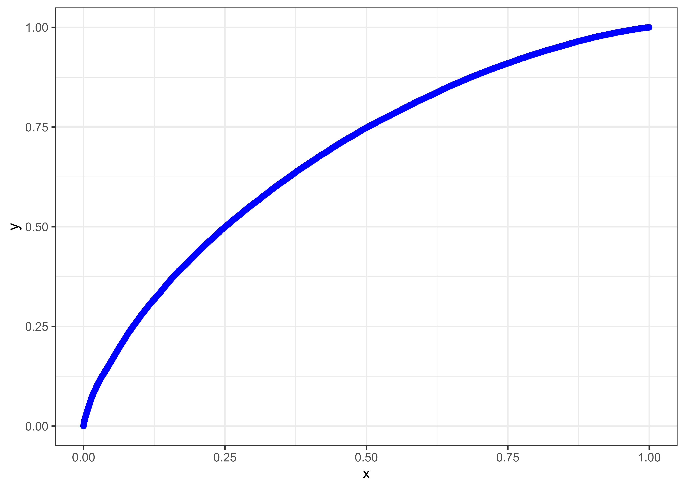

Chapter 3 Logistic Regression Model and Credit Scorecard
At the outset, the dataset presents a number of challenges:
There is a mix of continuous and categorical data.
The number of observations is very large.
The possible number of predictors is large (partially due to one-hot encoding of categorical values).
As shown in the previous section, credit margins have changed over time. This is clearly related to the wider US economic environment. Financial hardship is a key driver for some of the loans. Availability of disposable income is important to assess the ability to repay. Therefore, the cost of living, which varies from state to state, seems relevant.
[TODO: Bias/Complexity trade-off] [TODO: AoC? or AuC?]
3.1 Introduction
3.1.1 Split
The dataset was randomly split into training and validation sets (80/20 ratio).
We initiated the exploration of potential models with Principal Component Analysis, Linear Regression, Extreme Boosting and Random Forest. No model could be trained on the full set. We therefore came to limit the training set on a random sample of 0.1% (1 thousandth) of the initial full set.
Any model will require training in batch (e.g. stochastic gradient descent) or online. Our untested intuition is that online methods are not adapted to an unbalanced dataset: the number of defaults/write-offs is fairly low for high quality ratings. However, the dataset is evidently a time series which points to online training. We will not explore that line of investigation, although exploring that tension would be an interesting subject.
3.1.2 The modeling task
Two step process: - Given dataset (+/- rating?) find a score between -5 and +5 - Given a score between -5 and +5 given the right parameters for the modes - Given a density curve extrapolate the required margin
- Make money or not?
3.2 Logistic Regression
Logistic models (also called logit model) are used to model binary events. Examples would be passing or failing an exam, a newborn being a boy or a girl, a voter choosing a particular political party, or – relevant to us – a borrower defaulting or not on a loan. If the binary variable is modeled as a 0/1 outcome, the model will yield a value between 0 and 1 which can be used as a probabilty.
We are interested in using a number of variables (being continuous and/or categorical) to model the binary response. A natural model is a linear combination of the variables. Since the predicted value would be continuous and not be bounded by 0/1, the outcome is transformed. A commonly used transformation of the logodds (logarithm of the odds given a particular probability) \(\log \left( \frac{p}{1 - p} \right)\). This expression has a few advantages: it converts any value (between \(- \infty\) and \(+\infty\) produced by the linear regression), and it is symmetrical around \(x = 0\) and \(y = 1/2\). That is, using the odds instead of the probability avoids infinity; it behaves identically when p approaches 0 or 1 (this would not be the case using p). The reciprocal of the logodds is \(p = \frac{1}{1 - e^{-x}}\).
For a number of \(X_i\) variables, the model to fit is then:
\[p = \frac{1}{1 - e^{-\sum_i{\alpha_i X_i}}}\]
The commonly used method to evaluate the creditworthiness of a borrower is to create scorecards whereby particular characteristics are segmented into intervals and attributed discrete scores. In plain English, a continuous variable (say the age of the applicant) is segmented into intervals (e.g. 0-18 year-olds, 18-26 year-olds,…), and then given a score. Those different segments become categorical variables. The task of the model is to:
identify the best way to segment a continuous variable to maximise the information value of the different segments (called bins): intuitively empty or quasi-empty bins (either no or few applicants in the bin) are not informative; bins for which the response is completely random are not predictive, whereas a bin where the response always has the same response is informative (i.e. anybody with income of 0 and 10 dolars per year will default, anybody with a salary of $1 million per month will repay).
use a generalised linear model using the new categorical variables;
transforms the linear coefficients estimated for each category into numerical scores.
WARNING: To run this model, you will need at least 32GB of memory (real plus virtual/swap space)
3.2.1 Data preparation
WARNING: Execute
CleanLoad.Rmdfirst
# select the variables that might be used to create the training+test set
modelVarsIn <- c(LC_variable[LC_variable$inModel == TRUE, "variable_name"])$variable_name
modelVarsIn <- c(modelVarsIn,
"grade_num", "sub_grade_num",
"principal_loss_pct", "creditMargin", "monthDefault")
# Make sure that some variables are NOT in included in the final training set
modelVarsOut <- c("grade_num", "sub_grade_num",
"principal_loss_pct", "creditMargin", "monthDefault",
"zip_code")## ###############################################################################################
##
## Prepare a dataset with ONLY the predictors NOT removing NA's
##
loansPredictors <-
loansWorkingSet %>%
# Keep the chosen predictors
# Use tidyselect::one_of() to avoid errors if column does not exist
select(tidyselect::one_of(modelVarsIn)) %>%
##
## Dates to numeric, in 'decimal' years since 2000
##
mutate_at(c("issue_d", "earliest_cr_line"), function(d) {
return(year(d) - 2000 + (month(d) - 1) / 12)
}) %>%
## Add polynomials of the dates to model the time-trend shape
mutate(
issue_d2 = issue_d^2,
issue_d3 = issue_d^3,
earliest_cr_line2 = earliest_cr_line^2,
earliest_cr_line3 = earliest_cr_line^3
) %>%
## Create a logical flag TRUE for non-defaulted (good) loans
mutate(isGoodLoan = (principal_loss_pct < 0.001)) %>%
select(-tidyselect::one_of(modelVarsOut))
## ###############################################################################################
##
## Create training / test sets 80%/20%
##
proportionTraining <- 0.8
set.seed(42)
nSamples <- nrow(loansPredictors)
sampleTraining <- sample(1:nSamples, floor(nSamples * proportionTraining), replace = FALSE)
loansTraining <- loansPredictors %>% slice(sampleTraining)
loansTest <- loansPredictors %>% slice(-sampleTraining)
# Subsets of the training set
set.seed(42)
nSamplesTraining <- nrow(loansTraining)
# 1%
sample01 <- sample(1:nSamplesTraining, floor(nSamplesTraining * 0.01), replace = FALSE)
loans01 <- loansTraining %>% slice(sample01)
# 20%
sample20 <- sample(1:nSamplesTraining, floor(nSamplesTraining * 0.20), replace = FALSE)
loans20 <- loansTraining %>% slice(sample20)3.3 Binning and Weight of Evidence
This subsection owes a lot influence to the smbinning package source code from which we reimplemented some aspects using the tidyverse style (the original source code uses SQL statements to access dataframes), and the Information package vignette.15
To identify the various bins (and number and location)
Let’s say that we have a binary dependent variable Y and a set of predictive variables X1,,Xp. As mentioned above, Y can capture a wide range of outcomes, such as defaulting on a loan, clicking on an ad, or terminating a subscription.
WOE and IV play two distinct roles when analyzing data:
WOE describes the relationship between a predictive variable and a binary target variable.
IV measures the strength of that relationship.# Ensure that `binner` is here and available
if ("package:binner" %in% search()) {
detach("package:binner", unload = TRUE, force = TRUE)
}
if (!("binner" %in% installed.packages()[,1])) {
devtools::install_local("~/Development/R/DVPT-PACKAGES/Score_modeling_binning/binner",
force = TRUE,
quiet = TRUE)
# devtools::install_github("Emmanuel-R8/SMBinning")
}
library(binner)3.3.1 Loop through all variables
loansBinning <- loansTraining %>%
mutate(
home_ownership = as_factor(home_ownership),
emp_length = as_factor(emp_length),
grade = as_factor(grade)
)
informationValues <- tibble(variable = names(loansBinning), IV = -1.0)
listBins <-
tibble(
variable = "",
type = "",
IV = 0.0,
WoE = list(),
.rows = 0
)# About 500 sec wall-time
startTime <- proc.time()
for (n in informationValues$variable) {
cat("Variable: ", n)
# We don't test the response with itself
if (n %in% c("isGoodLoan")) {
cat("\n")
} else {
if (class(loansBinning[[1, n]]) == "factor") {
cat(" is a factor, ")
result <- WoETableCategorical(
df = loansBinning,
x = n,
y = "isGoodLoan",
maxCategories = 100)
} else {
cat(" is numeric, ")
result <- WoETableContinuous(df = loansBinning,
x = n,
y = "isGoodLoan",
p = 0.05)
}
tryCatch({
if (is.na(result)) {
cat("Variable skipped.\n")
add_row(
listBins,
variable = n,
type = NA,
IV = NA
)
} else {
cat(" IV : ", result$IV, "\n")
listBins <- listBins %>%
add_row(
variable = n,
type = result$type,
IV = result$IV,
WoE = list(result$table)
)
informationValues[n] <- result$IV
}
},
finally = {})
}
}## Variable: loanID is numeric, Number of missing/NA values: 0
## IV : 0.03483779
## Variable: loan_amnt is numeric, Number of missing/NA values: 0
## IV : 0.03616236
## Variable: term is numeric, Number of missing/NA values: 0
## IV : 0.1732862
## Variable: int_rate is numeric, Number of missing/NA values: 0
## IV : 0.4652705
## Variable: grade is a factor, IV : 0.4601578
## Variable: sub_grade is a factor, IV : 0.4939204
## Variable: emp_length is a factor, Variable skipped.
## Variable: home_ownership is a factor, IV : 0.03122319
## Variable: verification_status is a factor, IV : 0.0568103
## Variable: issue_d is numeric, Number of missing/NA values: 0
## IV : 0.04082864
## Variable: purpose is a factor, IV : 0.0195876
## Variable: addr_state is a factor, IV : 0.01663099
## Variable: dti is numeric, Number of missing/NA values: 247
## IV : 0.07445211
## Variable: delinq_2yrs is numeric, Number of missing/NA values: 23
## IV : 0.002442208
## Variable: earliest_cr_line is numeric, Number of missing/NA values: 23
## IV : 0.01668446
## Variable: inq_last_6mths is numeric, Number of missing/NA values: 24
## IV : 0.02654189
## Variable: mths_since_last_delinq is numeric, Number of missing/NA values: 527124
## IV : 0.002617462
## Variable: mths_since_last_record is numeric, Number of missing/NA values: 866836
## IV : 0.006109422
## Variable: open_acc is numeric, Number of missing/NA values: 23
## IV : 0.004893466
## Variable: pub_rec is numeric, Number of missing/NA values: 23
## IV : 0.005781389
## Variable: revol_bal is numeric, Number of missing/NA values: 0
## IV : 0.002693195
## Variable: revol_util is numeric, Number of missing/NA values: 687
## IV : 0.02549172
## Variable: total_acc is numeric, Number of missing/NA values: 23
## IV : 0.001581812
## Variable: application_type is a factor, IV : 0.001462783
## Variable: annual_inc_joint is numeric, Variable skipped.
## Variable: dti_joint is numeric, Variable skipped.
## Variable: verification_status_joint is a factor, IV : 0.001828885
## Variable: acc_now_delinq is numeric, Variable skipped.
## Variable: open_rv_12m is numeric, Number of missing/NA values: 645401
## IV : 0.02649645
## Variable: open_rv_24m is numeric, Number of missing/NA values: 645401
## IV : 0.03337626
## Variable: max_bal_bc is numeric, Number of missing/NA values: 645401
## IV : 0.02120239
## Variable: inq_fi is numeric, Number of missing/NA values: 645401
## IV : 0.01993185
## Variable: avg_cur_bal is numeric, Number of missing/NA values: 56032
## IV : 0.05429846
## Variable: bc_open_to_buy is numeric, Number of missing/NA values: 51160
## IV : 0.03048348
## Variable: bc_util is numeric, Number of missing/NA values: 51160
## IV : 0.03048348
## Variable: mo_sin_old_il_acct is numeric, Number of missing/NA values: 85391
## IV : 0.009095095
## Variable: mo_sin_old_rev_tl_op is numeric, Number of missing/NA values: 56016
## IV : 0.02704707
## Variable: mo_sin_rcnt_rev_tl_op is numeric, Number of missing/NA values: 56016
## IV : 0.02959229
## Variable: mo_sin_rcnt_tl is numeric, Number of missing/NA values: 56015
## IV : 0.03358796
## Variable: mort_acc is numeric, Number of missing/NA values: 39839
## IV : 0.04381551
## Variable: mths_since_recent_bc is numeric, Number of missing/NA values: 49826
## IV : 0.02727271
## Variable: mths_since_recent_bc_dlq is numeric, Number of missing/NA values: 797767
## IV : 0.001486543
## Variable: mths_since_recent_inq is numeric, Number of missing/NA values: 137406
## IV : 0.0348828
## Variable: mths_since_recent_revol_delinq is numeric, Number of missing/NA values: 696281
## IV : 0.001433636
## Variable: num_accts_ever_120_pd is numeric, Number of missing/NA values: 56015
## IV : 0.006819851
## Variable: num_actv_bc_tl is numeric, Number of missing/NA values: 56015
## IV : 0.01471619
## Variable: num_actv_rev_tl is numeric, Number of missing/NA values: 56015
## IV : 0.03353568
## Variable: num_bc_sats is numeric, Number of missing/NA values: 46723
## IV : 0.005841431
## Variable: num_bc_tl is numeric, Number of missing/NA values: 56015
## IV : 0.007157188
## Variable: num_il_tl is numeric, Number of missing/NA values: 56015
## IV : 0.005147452
## Variable: num_op_rev_tl is numeric, Number of missing/NA values: 56015
## IV : 0.01095223
## Variable: num_rev_accts is numeric, Number of missing/NA values: 56015
## IV : 0.004930698
## Variable: num_rev_tl_bal_gt_0 is numeric, Number of missing/NA values: 56015
## IV : 0.03221086
## Variable: num_sats is numeric, Number of missing/NA values: 46723
## IV : 0.008577643
## Variable: num_tl_120dpd_2m is numeric, Variable skipped.
## Variable: num_tl_30dpd is numeric, Variable skipped.
## Variable: num_tl_90g_dpd_24m is numeric, Number of missing/NA values: 56015
## IV : 0.005525681
## Variable: num_tl_op_past_12m is numeric, Number of missing/NA values: 56015
## IV : 0.04852394
## Variable: pct_tl_nvr_dlq is numeric, Number of missing/NA values: 56139
## IV : 0.005569665
## Variable: percent_bc_gt_75 is numeric, Number of missing/NA values: 50862
## IV : 0.0325666
## Variable: pub_rec_bankruptcies is numeric, Number of missing/NA values: 1114
## IV : 0.003680394
## Variable: tax_liens is numeric, Variable skipped.
## Variable: tot_hi_cred_lim is numeric, Number of missing/NA values: 56015
## IV : 0.05002856
## Variable: total_bal_ex_mort is numeric, Number of missing/NA values: 39839
## IV : 0.006069149
## Variable: total_bc_limit is numeric, Number of missing/NA values: 39839
## IV : 0.04118286
## Variable: total_il_high_credit_limit is numeric, Variable skipped.
## Variable: revol_bal_joint is numeric, Variable skipped.
## Variable: disbursement_method is a factor, IV : 4.121812e-05
## Variable: issue_d2 is numeric, Number of missing/NA values: 0
## IV : 0.04086939
## Variable: issue_d3 is numeric, Number of missing/NA values: 0
## IV : 0.04086939
## Variable: earliest_cr_line2 is numeric, Number of missing/NA values: 23
## IV : 0.002263311
## Variable: earliest_cr_line3 is numeric, Number of missing/NA values: 23
## IV : 0.01460377
## Variable: isGoodLoan3.3.2 Select relevant variables
It is considered that information value below 2% is useless.
bestBins %>%
select(variable, IV) %>%
mutate(IV = round(IV, digits = 5)) %>%
arrange(desc(IV)) %>%
slice(1:10)## # A tibble: 10 x 2
## variable IV
## <chr> <dbl>
## 1 sub_grade 0.494
## 2 int_rate 0.465
## 3 grade 0.460
## 4 term 0.173
## 5 dti 0.0744
## 6 verification_status 0.0568
## 7 avg_cur_bal 0.0543
## 8 tot_hi_cred_lim 0.0500
## 9 num_tl_op_past_12m 0.0485
## 10 mort_acc 0.0438However, we should ignore the variables that would not be available at the time the credit scoring is performed.
bestBins <- bestBins %>%
filter(!(variable %in% c(
"loanID", "term", "int_rate", "creditMargin", "loan_status",
"grade", "sub_grade", "grade_num", "sub_grade_num",
"emp_length", "home_ownership", "monthDefault",
"principal_loss_pct", "creditMargin", "monthDefault",
"isGoodLoan")))
saveRDS(bestBins, "datasets/bestBins100.rds")The 10 best variables that will retain are in the following table. Interestingly, the square and cubic powers of the issue date are retained.
bestBins %>%
select(variable, IV) %>%
mutate(IV = round(IV, digits = 5)) %>%
arrange(desc(IV)) %>%
slice(1:10)## # A tibble: 10 x 2
## variable IV
## <chr> <dbl>
## 1 dti 0.0744
## 2 verification_status 0.0568
## 3 avg_cur_bal 0.0543
## 4 tot_hi_cred_lim 0.0500
## 5 num_tl_op_past_12m 0.0485
## 6 mort_acc 0.0438
## 7 total_bc_limit 0.0412
## 8 issue_d2 0.0409
## 9 issue_d3 0.0409
## 10 issue_d 0.0408And the 10 worst (but retained) variables are:
bestBins %>%
select(variable, IV) %>%
mutate(IV = round(IV, digits = 5)) %>%
arrange(IV) %>%
slice(1:10)## # A tibble: 10 x 2
## variable IV
## <chr> <dbl>
## 1 max_bal_bc 0.0212
## 2 revol_util 0.0255
## 3 open_rv_12m 0.0265
## 4 inq_last_6mths 0.0265
## 5 mo_sin_old_rev_tl_op 0.0270
## 6 mths_since_recent_bc 0.0273
## 7 mo_sin_rcnt_rev_tl_op 0.0296
## 8 bc_open_to_buy 0.0305
## 9 bc_util 0.0305
## 10 num_rev_tl_bal_gt_0 0.03223.3.3 Create data table with only binary variables (transform every bin to a 0/1 value)
For each variable, create new variables for each bin in the WoE table of that variable.
# Variable will contain all the best characteristics. Every continuous variable is reformatted
# into factors reflecting the appropriate bins
allFactorsAsCharacteristics <- loansTraining[,"loanID"]
allFactorsAsBins <- loansTraining[,"loanID"]for (index in 1:nrow(bestBins)) {
#for (index in 1:27) {
name <- bestBins$variable[index][[1]]
cat("--------------------",
index,
"--",
name, "\n")
ltIndex <- which(names(loansTraining) == name)
characteristic <- categoriseFromWoE(df = loansTraining[, ltIndex],
varName = name,
woeTable = bestBins$WoE[index][[1]])
bins <- categoriseFromWoE.Wide(df = loansTraining[, ltIndex],
varName = name,
woeTable = bestBins$WoE[index][[1]])
allFactorsAsCharacteristics <-
allFactorsAsCharacteristics %>%
cbind(characteristic)
allFactorsAsBins <-
allFactorsAsBins %>%
cbind(bins)
}## -------------------- 1 -- loan_amnt
## -------------------- 2 -- verification_status
## -------------------- 3 -- issue_d
## -------------------- 4 -- dti
## -------------------- 5 -- inq_last_6mths
## -------------------- 6 -- revol_util
## -------------------- 7 -- open_rv_12m
## -------------------- 8 -- open_rv_24m
## -------------------- 9 -- max_bal_bc
## -------------------- 10 -- avg_cur_bal
## -------------------- 11 -- bc_open_to_buy
## -------------------- 12 -- bc_util
## -------------------- 13 -- mo_sin_old_rev_tl_op
## -------------------- 14 -- mo_sin_rcnt_rev_tl_op
## -------------------- 15 -- mo_sin_rcnt_tl
## -------------------- 16 -- mort_acc
## -------------------- 17 -- mths_since_recent_bc
## -------------------- 18 -- mths_since_recent_inq
## -------------------- 19 -- num_actv_rev_tl
## -------------------- 20 -- num_rev_tl_bal_gt_0
## -------------------- 21 -- num_tl_op_past_12m
## -------------------- 22 -- percent_bc_gt_75
## -------------------- 23 -- tot_hi_cred_lim
## -------------------- 24 -- total_bc_limit
## -------------------- 25 -- issue_d2
## -------------------- 26 -- issue_d33.3.4 Comparison of individual characteristics
[TODO] Present data by order of IV Sort WoE buildup for key IV
re-train secures the lowest Akaike criterion and will be chosen.
On this test, the best variables are: SORT BY IV. Then WoE for the first few ones.
loansBinning <- loans20 %>%
mutate(
home_ownership = as_factor(home_ownership),
emp_length = as_factor(emp_length)
)
best10 <- bestBins %>%
arrange(desc(IV)) %>%
slice(1:10)3.3.4.1 dti
plotBinWoE <- function(n = 1) {
vName <- best10[n,]$variable
if (best10[n,]$type == "numeric") {
best10[n,]$WoE[[1]] %>%
arrange(WoE) %>%
ggplot(aes(Name, WoE)) +
geom_col(col = "blue", fill = "lightblue") +
theme(axis.text.x = element_text(angle = 90, hjust = 1)) +
ggtitle(vName)
} else {
best10[n,]$WoE[[1]] %>%
arrange(WoE) %>%
ggplot(aes(Name, WoE)) +
geom_col(col = "blue", fill = "lightblue") +
theme(axis.text.x = element_text(angle = 90, hjust = 1)) +
ggtitle(vName)
}
}
3.3.4.2 Home ownership
resultHome <- WoETable(
df = loansBinning,
x = "home_ownership",
y = "isGoodLoan",
maxCategories = 20
)
resultHome## $IV
## [1] 0.03159041
##
## $type
## [1] "categorical"
##
## $table
## # A tibble: 6 x 19
## home_ownership Name Count nGood nBad cumCount cumGood cumBad pctCount pctGood pctBad OddsInBin LnOddsInBin WoEInBin IVInBin
## <chr> <chr> <dbl> <dbl> <dbl> <dbl> <dbl> <dbl> <dbl> <dbl> <dbl> <dbl> <dbl> <dbl> <dbl>
## 1 ANY ANY 48 41 7 48 41 7 2.30e-4 2.46e-4 1.66e-4 5.86 1.77 1.77 0
## 2 MORTGAGE MORT… 103381 85422 17959 103429 85463 17966 4.95e-1 5.12e-1 4.27e-1 4.76 1.56 1.56 0
## 3 NONE NONE 6 5 1 103435 85468 17967 2.87e-5 2.99e-5 2.38e-5 5. 1.61 1.61 0
## 4 OTHER OTHER 25 20 5 103460 85488 17972 1.20e-4 1.20e-4 1.19e-4 4. 1.39 1.39 0
## 5 OWN OWN 22153 17646 4507 125613 103134 22479 1.06e-1 1.06e-1 1.07e-1 3.92 1.36 1.36 0
## 6 RENT RENT 83403 63839 19564 209016 166973 42043 3.99e-1 3.82e-1 4.65e-1 3.26 1.18 1.18 0
## # … with 4 more variables: WoE <dbl>, IV <dbl>, pctGoodBin <dbl>, pctBadBin <dbl>3.3.4.3 Verification Status
resultVerif <- WoETable(
df = loansBinning,
x = "verification_status",
y = "isGoodLoan",
maxCategories = 20
)
resultVerif## $IV
## [1] 0.05906488
##
## $type
## [1] "categorical"
##
## $table
## # A tibble: 3 x 19
## verification_st… Name Count nGood nBad cumCount cumGood cumBad pctCount pctGood pctBad OddsInBin LnOddsInBin WoEInBin IVInBin
## <chr> <chr> <dbl> <dbl> <dbl> <dbl> <dbl> <dbl> <dbl> <dbl> <dbl> <dbl> <dbl> <dbl> <dbl>
## 1 Not Verified Not … 62900 53692 9208 62900 53692 9208 0.301 0.322 0.219 5.83 1.76 1.76 0
## 2 Source Verified Sour… 80857 63762 17095 143757 117454 26303 0.387 0.382 0.407 3.73 1.32 1.32 0
## 3 Verified Veri… 65259 49519 15740 209016 166973 42043 0.312 0.297 0.374 3.15 1.15 1.15 0
## # … with 4 more variables: WoE <dbl>, IV <dbl>, pctGoodBin <dbl>, pctBadBin <dbl>3.3.4.4 Purpose
resultHome <- WoETable(
df = loansBinning,
x = "purpose",
y = "isGoodLoan",
maxCategories = 20
)
resultHome## $IV
## [1] 0.01762216
##
## $type
## [1] "categorical"
##
## $table
## # A tibble: 14 x 19
## purpose Name Count nGood nBad cumCount cumGood cumBad pctCount pctGood pctBad OddsInBin LnOddsInBin WoEInBin IVInBin
## <chr> <chr> <dbl> <dbl> <dbl> <dbl> <dbl> <dbl> <dbl> <dbl> <dbl> <dbl> <dbl> <dbl> <dbl>
## 1 car car 2245 1917 328 2245 1917 328 0.0107 1.15e-2 7.80e-3 5.84 1.77 1.77 0
## 2 credit… cred… 45514 37704 7810 47759 39621 8138 0.218 2.26e-1 1.86e-1 4.83 1.57 1.57 0
## 3 debt_c… debt… 121629 95832 25797 169388 135453 33935 0.582 5.74e-1 6.14e-1 3.71 1.31 1.31 0
## 4 educat… educ… 71 57 14 169459 135510 33949 0.000340 3.41e-4 3.33e-4 4.07 1.40 1.40 0
## 5 home_i… home… 13711 11216 2495 183170 146726 36444 0.0656 6.72e-2 5.93e-2 4.50 1.50 1.50 0
## 6 house house 1141 904 237 184311 147630 36681 0.00546 5.41e-3 5.64e-3 3.81 1.34 1.34 0
## 7 major_… majo… 4505 3664 841 188816 151294 37522 0.0216 2.19e-2 2.00e-2 4.36 1.47 1.47 0
## 8 medical medi… 2405 1872 533 191221 153166 38055 0.0115 1.12e-2 1.27e-2 3.51 1.26 1.26 0
## 9 moving movi… 1505 1129 376 192726 154295 38431 0.00720 6.76e-3 8.94e-3 3.00 1.10 1.10 0
## 10 other other 12001 9425 2576 204727 163720 41007 0.0574 5.64e-2 6.13e-2 3.66 1.30 1.30 0
## 11 renewa… rene… 134 107 27 204861 163827 41034 0.000641 6.41e-4 6.42e-4 3.96 1.38 1.38 0
## 12 small_… smal… 2374 1688 686 207235 165515 41720 0.0114 1.01e-2 1.63e-2 2.46 0.900 0.900 0
## 13 vacati… vaca… 1412 1137 275 208647 166652 41995 0.00676 6.81e-3 6.54e-3 4.13 1.42 1.42 0
## 14 wedding wedd… 369 321 48 209016 166973 42043 0.00177 1.92e-3 1.14e-3 6.69 1.90 1.90 0
## # … with 4 more variables: WoE <dbl>, IV <dbl>, pctGoodBin <dbl>, pctBadBin <dbl>3.3.4.5 Sub grade
resultSubgrade <- WoETable(
df = loansBinning,
x = "sub_grade",
y = "isGoodLoan",
maxCategories = 50
)
resultSubgrade## $IV
## [1] 0.4980104
##
## $type
## [1] "categorical"
##
## $table
## # A tibble: 35 x 19
## sub_grade Name Count nGood nBad cumCount cumGood cumBad pctCount pctGood pctBad OddsInBin LnOddsInBin WoEInBin IVInBin WoE
## <chr> <chr> <dbl> <dbl> <dbl> <dbl> <dbl> <dbl> <dbl> <dbl> <dbl> <dbl> <dbl> <dbl> <dbl> <dbl>
## 1 A1 A1 6501 6297 204 6501 6297 204 0.0311 0.0377 0.00485 30.9 3.43 3.43 0 2.05
## 2 A2 A2 5620 5344 276 12121 11641 480 0.0269 0.0320 0.00656 19.4 2.96 2.96 0 1.58
## 3 A3 A3 5889 5582 307 18010 17223 787 0.0282 0.0334 0.00730 18.2 2.90 2.90 0 1.52
## 4 A4 A4 8159 7578 581 26169 24801 1368 0.0390 0.0454 0.0138 13.0 2.57 2.57 0 1.19
## 5 A5 A5 10020 9171 849 36189 33972 2217 0.0479 0.0549 0.0202 10.8 2.38 2.38 0 1.00
## 6 B1 B1 10934 9743 1191 47123 43715 3408 0.0523 0.0584 0.0283 8.18 2.10 2.10 0 0.723
## 7 B2 B2 11345 10101 1244 58468 53816 4652 0.0543 0.0605 0.0296 8.12 2.09 2.09 0 0.715
## 8 B3 B3 12838 11186 1652 71306 65002 6304 0.0614 0.0670 0.0393 6.77 1.91 1.91 0 0.534
## 9 B4 B4 12895 10959 1936 84201 75961 8240 0.0617 0.0656 0.0460 5.66 1.73 1.73 0 0.354
## 10 B5 B5 12882 10749 2133 97083 86710 10373 0.0616 0.0644 0.0507 5.04 1.62 1.62 0 0.238
## # … with 25 more rows, and 3 more variables: IV <dbl>, pctGoodBin <dbl>, pctBadBin <dbl>3.3.4.6 Employment years
resultEmp <- WoETable(
df = loansBinning,
x = "emp_length",
y = "isGoodLoan",
maxCategories = 20
)
resultEmp## $IV
## [1] NaN
##
## $type
## [1] "categorical"
##
## $table
## # A tibble: 9 x 19
## emp_length Name Count nGood nBad cumCount cumGood cumBad pctCount pctGood pctBad OddsInBin LnOddsInBin WoEInBin IVInBin
## <chr> <chr> <dbl> <dbl> <dbl> <dbl> <dbl> <dbl> <dbl> <dbl> <dbl> <dbl> <dbl> <dbl> <dbl>
## 1 2 2 19170 15398 3772 19170 15398 3772 0.0917 0.0922 0.0897 4.08 1.41 1.41 0
## 2 3 3 16645 13222 3423 35815 28620 7195 0.0796 0.0792 0.0814 3.86 1.35 1.35 0
## 3 4 4 12601 10185 2416 48416 38805 9611 0.0603 0.0610 0.0575 4.22 1.44 1.44 0
## 4 5 5 13032 10426 2606 61448 49231 12217 0.0623 0.0624 0.0620 4.00 1.39 1.39 0
## 5 6 6 9815 7944 1871 71263 57175 14088 0.0470 0.0476 0.0445 4.25 1.45 1.45 0
## 6 7 7 9295 7409 1886 80558 64584 15974 0.0445 0.0444 0.0449 3.93 1.37 1.37 0
## 7 8 8 9487 7567 1920 90045 72151 17894 0.0454 0.0453 0.0457 3.94 1.37 1.37 0
## 8 9 9 7675 6172 1503 97720 78323 19397 0.0367 0.0370 0.0357 4.11 1.41 1.41 0
## 9 0 0 0 0 0 97720 78323 19397 0 0 0 NaN NaN NaN NaN
## # … with 4 more variables: WoE <dbl>, IV <dbl>, pctGoodBin <dbl>, pctBadBin <dbl>3.3.4.7 Bank card utilisation
## $IV
## [1] 0.02918858
##
## $type
## [1] "numeric"
##
## $table
## # A tibble: 7 x 23
## CutNumber CutPoint name Min Max Count nGood nBad cumCount cumGood cumBad pctCount pctGood pctBad OddsInBin LnOddsInBin
## <dbl> <dbl> <chr> <dbl> <dbl> <dbl> <dbl> <dbl> <dbl> <dbl> <dbl> <dbl> <dbl> <dbl> <dbl> <dbl>
## 1 1 31.5 "" -Inf 31.5 37880 31697 6183 37880 31697 6183 0.181 0.190 0.147 5.13 1.63
## 2 2 52.2 "" 31.5 52.2 38014 30989 7025 75894 62686 13208 0.182 0.186 0.167 4.41 1.48
## 3 3 76.1 "" 52.2 76.1 52106 41337 10769 128000 104023 23977 0.249 0.248 0.256 3.84 1.35
## 4 4 90.8 "" 76.1 90.8 36497 28541 7956 164497 132564 31933 0.175 0.171 0.189 3.59 1.28
## 5 5 95.4 "" 90.8 95.4 14346 10999 3347 178843 143563 35280 0.0686 0.0659 0.0796 3.29 1.19
## 6 6 203. "" 95.4 203. 19803 14780 5023 198646 158343 40303 0.0947 0.0885 0.119 2.94 1.08
## 7 7 NA <NA> NA NA 10370 8630 1740 209016 166973 42043 0.0496 0.0517 0.0414 4.96 1.60
## # … with 7 more variables: WoEInBin <dbl>, IVInBin <dbl>, WoE <dbl>, IV <dbl>, Name <chr>, pctGoodBin <dbl>, pctBadBin <dbl>3.3.4.8 State
resultState <- WoETable(
df = loansBinning,
x = "addr_state",
y = "isGoodLoan",
maxCategories = 100
)
resultState## $IV
## [1] 0.01744293
##
## $type
## [1] "categorical"
##
## $table
## # A tibble: 51 x 19
## addr_state Name Count nGood nBad cumCount cumGood cumBad pctCount pctGood pctBad OddsInBin LnOddsInBin WoEInBin IVInBin
## <chr> <chr> <dbl> <dbl> <dbl> <dbl> <dbl> <dbl> <dbl> <dbl> <dbl> <dbl> <dbl> <dbl> <dbl>
## 1 AK AK 442 345 97 442 345 97 0.00211 0.00207 0.00231 3.56 1.27 1.27 0
## 2 AL AL 2545 1973 572 2987 2318 669 0.0122 0.0118 0.0136 3.45 1.24 1.24 0
## 3 AR AR 1543 1175 368 4530 3493 1037 0.00738 0.00704 0.00875 3.19 1.16 1.16 0
## 4 AZ AZ 5214 4224 990 9744 7717 2027 0.0249 0.0253 0.0235 4.27 1.45 1.45 0
## 5 CA CA 30732 24682 6050 40476 32399 8077 0.147 0.148 0.144 4.08 1.41 1.41 0
## 6 CO CO 4633 3908 725 45109 36307 8802 0.0222 0.0234 0.0172 5.39 1.68 1.68 0
## 7 CT CT 3024 2483 541 48133 38790 9343 0.0145 0.0149 0.0129 4.59 1.52 1.52 0
## 8 DC DC 531 461 70 48664 39251 9413 0.00254 0.00276 0.00166 6.59 1.88 1.88 0
## 9 DE DE 594 468 126 49258 39719 9539 0.00284 0.00280 0.00300 3.71 1.31 1.31 0
## 10 FL FL 14906 11726 3180 64164 51445 12719 0.0713 0.0702 0.0756 3.69 1.30 1.30 0
## # … with 41 more rows, and 4 more variables: WoE <dbl>, IV <dbl>, pctGoodBin <dbl>, pctBadBin <dbl>3.3.4.9 Annual income
resultInc <- WoETable(
df = loansBinning,
x = "annual_inc_joint",
y = "isGoodLoan",
p = 0.05
)
resultHome## $IV
## [1] 0.01762216
##
## $type
## [1] "categorical"
##
## $table
## # A tibble: 14 x 19
## purpose Name Count nGood nBad cumCount cumGood cumBad pctCount pctGood pctBad OddsInBin LnOddsInBin WoEInBin IVInBin
## <chr> <chr> <dbl> <dbl> <dbl> <dbl> <dbl> <dbl> <dbl> <dbl> <dbl> <dbl> <dbl> <dbl> <dbl>
## 1 car car 2245 1917 328 2245 1917 328 0.0107 1.15e-2 7.80e-3 5.84 1.77 1.77 0
## 2 credit… cred… 45514 37704 7810 47759 39621 8138 0.218 2.26e-1 1.86e-1 4.83 1.57 1.57 0
## 3 debt_c… debt… 121629 95832 25797 169388 135453 33935 0.582 5.74e-1 6.14e-1 3.71 1.31 1.31 0
## 4 educat… educ… 71 57 14 169459 135510 33949 0.000340 3.41e-4 3.33e-4 4.07 1.40 1.40 0
## 5 home_i… home… 13711 11216 2495 183170 146726 36444 0.0656 6.72e-2 5.93e-2 4.50 1.50 1.50 0
## 6 house house 1141 904 237 184311 147630 36681 0.00546 5.41e-3 5.64e-3 3.81 1.34 1.34 0
## 7 major_… majo… 4505 3664 841 188816 151294 37522 0.0216 2.19e-2 2.00e-2 4.36 1.47 1.47 0
## 8 medical medi… 2405 1872 533 191221 153166 38055 0.0115 1.12e-2 1.27e-2 3.51 1.26 1.26 0
## 9 moving movi… 1505 1129 376 192726 154295 38431 0.00720 6.76e-3 8.94e-3 3.00 1.10 1.10 0
## 10 other other 12001 9425 2576 204727 163720 41007 0.0574 5.64e-2 6.13e-2 3.66 1.30 1.30 0
## 11 renewa… rene… 134 107 27 204861 163827 41034 0.000641 6.41e-4 6.42e-4 3.96 1.38 1.38 0
## 12 small_… smal… 2374 1688 686 207235 165515 41720 0.0114 1.01e-2 1.63e-2 2.46 0.900 0.900 0
## 13 vacati… vaca… 1412 1137 275 208647 166652 41995 0.00676 6.81e-3 6.54e-3 4.13 1.42 1.42 0
## 14 wedding wedd… 369 321 48 209016 166973 42043 0.00177 1.92e-3 1.14e-3 6.69 1.90 1.90 0
## # … with 4 more variables: WoE <dbl>, IV <dbl>, pctGoodBin <dbl>, pctBadBin <dbl>3.3.4.10 Loan amount
## $IV
## [1] 0.03442168
##
## $type
## [1] "numeric"
##
## $table
## # A tibble: 7 x 23
## CutNumber CutPoint name Min Max Count nGood nBad cumCount cumGood cumBad pctCount pctGood pctBad OddsInBin LnOddsInBin
## <dbl> <dbl> <chr> <dbl> <dbl> <dbl> <dbl> <dbl> <dbl> <dbl> <dbl> <dbl> <dbl> <dbl> <dbl> <dbl>
## 1 1 3500 "" -Inf 3500 12109 10325 1784 12109 10325 1784 0.0579 0.0618 0.0424 5.79 1.76
## 2 2 9000 "" 3500 9000 54266 45162 9104 66375 55487 10888 0.260 0.270 0.217 4.96 1.60
## 3 3 10000 "" 9000 10000 20022 16170 3852 86397 71657 14740 0.0958 0.0968 0.0916 4.20 1.43
## 4 4 14975 "" 10000 14975 33242 26250 6992 119639 97907 21732 0.159 0.157 0.166 3.75 1.32
## 5 5 15000 "" 14975 15000 10817 8743 2074 130456 106650 23806 0.0518 0.0524 0.0493 4.22 1.44
## 6 6 28000 "" 15000 28000 60284 46570 13714 190740 153220 37520 0.288 0.279 0.326 3.40 1.22
## 7 7 40000 "" 28000 40000 18276 13753 4523 209016 166973 42043 0.0874 0.0824 0.108 3.04 1.11
## # … with 7 more variables: WoEInBin <dbl>, IVInBin <dbl>, WoE <dbl>, IV <dbl>, Name <chr>, pctGoodBin <dbl>, pctBadBin <dbl>3.4 Logistic Regression
3.4.1 Logistic regression using the SpeedGLM package
NOTE:
speedglmhas aselect()function which would shadowdplyr::select(), so it is only used fully qualified to avoid any collision.
# Cleanup and reload
# Training results to speed up analysis
# load("datasets/GLModelResults.rda")
loansTraining <- readRDS("datasets/LoansTraining.rds")
# Take the allBins dataset (without `loanID`)
# Add the desired response
allFactorsAsCharacteristics <- readRDS("datasets/allCharacteristics100.rds")
allFactorsAsBins <- readRDS("datasets/allBins100.rds")
loanSampleBins <-
allFactorsAsBins %>%
select(-loanID) %>%
cbind(loansTraining$isGoodLoan) %>%
rename(isGoodLoan = "loansTraining$isGoodLoan") %>%
mutate(isGoodLoan = if_else(isGoodLoan, 1, 0)) %>%
as.data.frame()
loanSampleCharacteristics <-
allFactorsAsCharacteristics %>%
select(-loanID) %>%
cbind(loansTraining$isGoodLoan) %>%
rename(isGoodLoan = "loansTraining$isGoodLoan") %>%
mutate(isGoodLoan = if_else(isGoodLoan, 1, 0)) %>%
as.data.frame()
rm(loansTraining)
gc(full = TRUE)3.4.2 Remove identical bins
namesCharacteristics <- names(loanSampleCharacteristics)
namesBins <- names(loanSampleBins)
# Starting list of names
# > The following two variables are only useful if all the bins have been given their own column (if a
# > characteristic has 7 factors, that creates 7 bins and column).
# Running GLM would give a number of NAs if some columns are linearly dependant (in our case
# actually equal). A "trick" to identify them is to run a hash digest on each column and spot
# identical hashes The original variables were not identical, but when split into categories, they
# can become identical. For example, if no income is provided (income=NA category), no
# debt-to-income ratio can be calculated (dti=NA).
duplicateNames <- loanSampleBins[duplicated(lapply(loanSampleBins, digest::digest))] %>% names()
duplicateNames## [1] "(open_rv_24m) open_rv_24m=NA" "(max_bal_bc) max_bal_bc=NA"
## [3] "(bc_util) -Inf<bc_util<=31.5" "(bc_util) 31.5<bc_util<=38.8"
## [5] "(bc_util) 38.8<bc_util<=46.1" "(bc_util) 46.1<bc_util<=53.9"
## [7] "(bc_util) 53.9<bc_util<=72.5" "(bc_util) 72.5<bc_util<=87.6"
## [9] "(bc_util) 87.6<bc_util<=91.9" "(bc_util) 91.9<bc_util<=97.9"
## [11] "(bc_util) 97.9<bc_util<=339.6" "(bc_util) bc_util=NA"
## [13] "(mo_sin_rcnt_rev_tl_op) mo_sin_rcnt_rev_tl_op=NA" "(num_actv_rev_tl) num_actv_rev_tl=NA"
## [15] "(num_rev_tl_bal_gt_0) num_rev_tl_bal_gt_0=NA" "(num_tl_op_past_12m) num_tl_op_past_12m=NA"
## [17] "(tot_hi_cred_lim) tot_hi_cred_lim=NA" "(total_bc_limit) total_bc_limit=NA"
## [19] "(issue_d2) 200.694<issue_d2<=215.111" "(issue_d2) 215.111<issue_d2<=258.674"
## [21] "(issue_d2) 258.674<issue_d2<=277.778" "(issue_d2) 277.778<issue_d2<=315.062"
## [23] "(issue_d2) 315.062<issue_d2<=357.84" "(issue_d3) -Inf<issue_d3<=2599.609"
## [25] "(issue_d3) 2599.609<issue_d3<=2843.171" "(issue_d3) 2843.171<issue_d3<=3154.963"
## [27] "(issue_d3) 3154.963<issue_d3<=4160.334" "(issue_d3) 4160.334<issue_d3<=4629.63"
## [29] "(issue_d3) 4629.63<issue_d3<=5592.359" "(issue_d3) 5592.359<issue_d3<=6769.145"3.4.3 First training on variables previously selected on their Information Value
We use speedglm being quick. Note that alternatives were also tried: glm crashed on even small extracts of the dataset. glmnet returns errors that were not understandable or documented on the internet.
3.4.3.1 GLM on characteristics
## used (Mb) gc trigger (Mb) max used (Mb)
## Ncells 2836006 151.5 6816128 364.1 6816128 364.1
## Vcells 453172043 3457.5 1151772154 8787.4 1826494161 13935.1# About 700 sec wall-time to complete training dataset
# The dataset is the sample less duplicate, less zero-ed columns
{
doMC::registerDoMC(cores = 1) # Too many processes push over 32GB
startTime <- proc.time()
loansData <- loanSampleCharacteristics %>%
select(-one_of( c(duplicateNames,
zeroColumnsNames)))
SGLM_C_train <- speedglm::speedglm(isGoodLoan ~ .,
data = loansData,
family = binomial())
doMC::registerDoMC(cores = NULL)
cat(proc.time() - startTime, "\n")
}## Generalized Linear Model of class 'speedglm':
##
## Call: speedglm::speedglm(formula = isGoodLoan ~ ., data = loansData, family = binomial())
##
## Coefficients:
## ------------------------------------------------------------------
## Estimate Std. Error z value Pr(>|z|)
## (Intercept) 1.654651 0.027022 61.2330 0.00e+00 ***
## loan_amnt14975<loan_amnt<=15000 -0.611612 0.016493 -37.0834 5.20e-301 ***
## loan_amnt9000<loan_amnt<=10000 -0.423648 0.014555 -29.1068 2.94e-186 ***
## loan_amnt12000<loan_amnt<=14975 -0.657958 0.015413 -42.6873 0.00e+00 ***
## loan_amnt15000<loan_amnt<=17000 -0.785494 0.015970 -49.1862 0.00e+00 ***
## loan_amnt3500<loan_amnt<=9000 -0.176897 0.012956 -13.6540 1.91e-42 ***
## loan_amnt19950<loan_amnt<=28000 -0.922807 0.013695 -67.3806 0.00e+00 ***
## loan_amnt28000<loan_amnt<=40000 -1.161735 0.015222 -76.3171 0.00e+00 ***
## loan_amnt10000<loan_amnt<=12000 -0.561516 0.014458 -38.8382 0.00e+00 ***
## loan_amnt17000<loan_amnt<=19950 -0.883419 0.015922 -55.4846 0.00e+00 ***
## verification_statusSource Verified -0.212522 0.006704 -31.6993 1.59e-220 ***
## verification_statusVerified -0.284086 0.007080 -40.1275 0.00e+00 ***
## issue_d-Inf<issue_d<=14.167 0.571031 0.017279 33.0479 1.67e-239 ***
## issue_d14.667<issue_d<=16.083 0.304914 0.012108 25.1839 6.01e-140 ***
## issue_d16.083<issue_d<=16.667 -0.056860 0.009120 -6.2344 4.53e-10 ***
## issue_d14.167<issue_d<=14.667 0.375426 0.015807 23.7501 1.10e-124 ***
## issue_d17.75<issue_d<=18.917 0.362928 0.013544 26.7952 3.67e-158 ***
## dti0.156<dti<=0.178 -0.158876 0.010902 -14.5727 4.19e-48 ***
## dti0.122<dti<=0.143 -0.059598 0.011283 -5.2821 1.28e-07 ***
## dti0.192<dti<=0.217 -0.250862 0.010760 -23.3148 3.14e-120 ***
## dti0.254<dti<=0.272 -0.434550 0.012870 -33.7648 6.48e-250 ***
## dti0.299<dti<=9.99 -0.657574 0.010587 -62.1126 0.00e+00 ***
## dti0.178<dti<=0.192 -0.200020 0.012599 -15.8759 9.31e-57 ***
## dti0.272<dti<=0.299 -0.491943 0.012061 -40.7896 0.00e+00 ***
## dti0.097<dti<=0.122 -0.026908 0.011341 -2.3727 1.77e-02 *
## dti0.236<dti<=0.254 -0.372892 0.012484 -29.8692 4.95e-196 ***
## dti0.143<dti<=0.156 -0.119758 0.013051 -9.1763 4.46e-20 ***
## dti0.217<dti<=0.236 -0.330228 0.011854 -27.8574 8.77e-171 ***
## dtidti=NA -0.257596 0.164234 -1.5685 1.17e-01
## inq_last_6mths-Inf<inq_last_6mths<=0 0.202236 0.010651 18.9869 2.19e-80 ***
## inq_last_6mths0<inq_last_6mths<=1 0.096644 0.008981 10.7611 5.25e-27 ***
## inq_last_6mths2<inq_last_6mths<=33 -0.146377 0.012374 -11.8294 2.75e-32 ***
## inq_last_6mthsinq_last_6mths=NA 0.357904 0.746709 0.4793 6.32e-01
## revol_util0.217<revol_util<=0.316 0.010713 0.014609 0.7333 4.63e-01
## revol_util0.718<revol_util<=0.869 -0.216150 0.017190 -12.5740 2.93e-36 ***
## revol_util0.869<revol_util<=3.666 -0.309763 0.018638 -16.6196 5.03e-62 ***
## revol_util0.479<revol_util<=0.569 -0.116696 0.016627 -7.0183 2.25e-12 ***
## revol_util0.569<revol_util<=0.718 -0.148698 0.016462 -9.0327 1.68e-19 ***
## revol_util0.388<revol_util<=0.479 -0.080468 0.016286 -4.9408 7.78e-07 ***
## revol_util0.147<revol_util<=0.217 0.018170 0.016165 1.1240 2.61e-01
## revol_util0.316<revol_util<=0.388 -0.029066 0.016419 -1.7702 7.67e-02 .
## revol_utilrevol_util=NA -0.325272 0.105784 -3.0749 2.11e-03 **
## open_rv_12mopen_rv_12m=NA -0.052021 0.016200 -3.2111 1.32e-03 **
## open_rv_12m-Inf<open_rv_12m<=0 -0.072098 0.013569 -5.3134 1.08e-07 ***
## open_rv_12m2<open_rv_12m<=28 0.168254 0.015514 10.8455 2.09e-27 ***
## open_rv_12m1<open_rv_12m<=2 0.082332 0.012798 6.4331 1.25e-10 ***
## open_rv_24mopen_rv_24m=NA NA NA NA NA
## open_rv_24m1<open_rv_24m<=2 -0.040201 0.013740 -2.9259 3.43e-03 **
## open_rv_24m3<open_rv_24m<=5 -0.171765 0.015503 -11.0797 1.57e-28 ***
## open_rv_24m2<open_rv_24m<=3 -0.124506 0.015078 -8.2577 1.48e-16 ***
## open_rv_24m-Inf<open_rv_24m<=0 -0.086165 0.018857 -4.5693 4.89e-06 ***
## open_rv_24m5<open_rv_24m<=53 -0.264156 0.018018 -14.6610 1.15e-48 ***
## max_bal_bcmax_bal_bc=NA NA NA NA NA
## max_bal_bc7905<max_bal_bc<=776843 -0.013343 0.011801 -1.1307 2.58e-01
## max_bal_bc5122<max_bal_bc<=7905 0.003012 0.011053 0.2725 7.85e-01
## avg_cur_balavg_cur_bal=NA -0.949400 0.535525 -1.7728 7.63e-02 .
## avg_cur_bal11363<avg_cur_bal<=14047 -0.031547 0.014191 -2.2231 2.62e-02 *
## avg_cur_bal27395<avg_cur_bal<=41609 -0.088727 0.018088 -4.9052 9.33e-07 ***
## avg_cur_bal14047<avg_cur_bal<=21129 -0.068323 0.013534 -5.0484 4.46e-07 ***
## avg_cur_bal21129<avg_cur_bal<=27395 -0.090694 0.016671 -5.4403 5.32e-08 ***
## avg_cur_bal8012<avg_cur_bal<=11363 -0.008267 0.011130 -0.7427 4.58e-01
## avg_cur_bal41609<avg_cur_bal<=800008 -0.076770 0.022773 -3.3711 7.49e-04 ***
## bc_open_to_buy0.315<bc_open_to_buy<=0.388 0.027298 0.014245 1.9162 5.53e-02 .
## bc_open_to_buy0.979<bc_open_to_buy<=3.396 -0.101314 0.021487 -4.7151 2.42e-06 ***
## bc_open_to_buy0.461<bc_open_to_buy<=0.539 0.087466 0.014658 5.9673 2.41e-09 ***
## bc_open_to_buy0.876<bc_open_to_buy<=0.919 0.200794 0.019174 10.4722 1.16e-25 ***
## bc_open_to_buy0.725<bc_open_to_buy<=0.876 0.225314 0.015733 14.3210 1.62e-46 ***
## bc_open_to_buy0.539<bc_open_to_buy<=0.725 0.142411 0.013729 10.3728 3.30e-25 ***
## bc_open_to_buybc_open_to_buy=NA -0.293741 0.089194 -3.2933 9.90e-04 ***
## bc_open_to_buy0.388<bc_open_to_buy<=0.461 0.062577 0.014531 4.3065 1.66e-05 ***
## bc_open_to_buy0.919<bc_open_to_buy<=0.979 0.081235 0.019246 4.2209 2.43e-05 ***
## bc_util31.5<bc_util<=38.8 NA NA NA NA
## bc_util97.9<bc_util<=339.6 NA NA NA NA
## bc_util46.1<bc_util<=53.9 NA NA NA NA
## bc_util87.6<bc_util<=91.9 NA NA NA NA
## bc_util72.5<bc_util<=87.6 NA NA NA NA
## bc_util53.9<bc_util<=72.5 NA NA NA NA
## bc_utilbc_util=NA NA NA NA NA
## bc_util38.8<bc_util<=46.1 NA NA NA NA
## bc_util91.9<bc_util<=97.9 NA NA NA NA
## mo_sin_old_rev_tl_opmo_sin_old_rev_tl_op=NA -8.640285 16.181331 -0.5340 5.93e-01
## mo_sin_old_rev_tl_op212<mo_sin_old_rev_tl_op<=852 0.044524 0.007339 6.0664 1.31e-09 ***
## mo_sin_old_rev_tl_op82<mo_sin_old_rev_tl_op<=132 -0.088202 0.007738 -11.3983 4.27e-30 ***
## mo_sin_old_rev_tl_op132<mo_sin_old_rev_tl_op<=143 -0.049584 0.011767 -4.2139 2.51e-05 ***
## mo_sin_old_rev_tl_op-Inf<mo_sin_old_rev_tl_op<=58 -0.293715 0.011417 -25.7264 5.92e-146 ***
## mo_sin_old_rev_tl_op58<mo_sin_old_rev_tl_op<=82 -0.167112 0.011999 -13.9270 4.34e-44 ***
## mo_sin_old_rev_tl_op143<mo_sin_old_rev_tl_op<=154 -0.033960 0.012092 -2.8085 4.98e-03 **
## mo_sin_rcnt_rev_tl_opmo_sin_rcnt_rev_tl_op=NA NA NA NA NA
## mo_sin_rcnt_rev_tl_op4<mo_sin_rcnt_rev_tl_op<=7 -0.088233 0.018420 -4.7902 1.67e-06 ***
## mo_sin_rcnt_rev_tl_op7<mo_sin_rcnt_rev_tl_op<=9 -0.153633 0.019716 -7.7923 6.58e-15 ***
## mo_sin_rcnt_rev_tl_op9<mo_sin_rcnt_rev_tl_op<=16 -0.196814 0.017880 -11.0077 3.51e-28 ***
## mo_sin_rcnt_rev_tl_op16<mo_sin_rcnt_rev_tl_op<=20 -0.198438 0.021067 -9.4195 4.53e-21 ***
## mo_sin_rcnt_rev_tl_op3<mo_sin_rcnt_rev_tl_op<=4 -0.043725 0.019807 -2.2075 2.73e-02 *
## mo_sin_rcnt_rev_tl_op20<mo_sin_rcnt_rev_tl_op<=28 -0.144915 0.020829 -6.9574 3.46e-12 ***
## mo_sin_rcnt_rev_tl_op-Inf<mo_sin_rcnt_rev_tl_op<=1 -0.041782 0.024580 -1.6998 8.92e-02 .
## mo_sin_rcnt_rev_tl_op28<mo_sin_rcnt_rev_tl_op<=438 -0.109213 0.021447 -5.0923 3.54e-07 ***
## mo_sin_rcnt_rev_tl_op1<mo_sin_rcnt_rev_tl_op<=2 0.050357 0.022129 2.2756 2.29e-02 *
## mo_sin_rcnt_tlmo_sin_rcnt_tl=NA 9.277562 16.190846 0.5730 5.67e-01
## mo_sin_rcnt_tl5<mo_sin_rcnt_tl<=7 0.104581 0.015179 6.8900 5.58e-12 ***
## mo_sin_rcnt_tl7<mo_sin_rcnt_tl<=9 0.145049 0.016676 8.6980 3.38e-18 ***
## mo_sin_rcnt_tl3<mo_sin_rcnt_tl<=4 0.064671 0.017181 3.7641 1.67e-04 ***
## mo_sin_rcnt_tl11<mo_sin_rcnt_tl<=14 0.162630 0.021632 7.5178 5.57e-14 ***
## mo_sin_rcnt_tl-Inf<mo_sin_rcnt_tl<=1 0.031869 0.020662 1.5423 1.23e-01
## mo_sin_rcnt_tl9<mo_sin_rcnt_tl<=11 0.179566 0.017338 10.3570 3.89e-25 ***
## mo_sin_rcnt_tl1<mo_sin_rcnt_tl<=2 -0.011416 0.017458 -0.6539 5.13e-01
## mo_sin_rcnt_tl4<mo_sin_rcnt_tl<=5 0.110631 0.016327 6.7760 1.24e-11 ***
## mo_sin_rcnt_tl21<mo_sin_rcnt_tl<=314 0.160153 0.029004 5.5217 3.36e-08 ***
## mo_sin_rcnt_tl14<mo_sin_rcnt_tl<=21 0.209792 0.027451 7.6424 2.13e-14 ***
## mort_acc2<mort_acc<=3 0.177831 0.010684 16.6438 3.36e-62 ***
## mort_acc1<mort_acc<=2 0.145860 0.009290 15.7002 1.51e-55 ***
## mort_acc0<mort_acc<=1 0.068731 0.008331 8.2497 1.59e-16 ***
## mort_accmort_acc=NA 0.190708 0.038050 5.0121 5.38e-07 ***
## mort_acc3<mort_acc<=5 0.210186 0.010893 19.2958 5.83e-83 ***
## mort_acc5<mort_acc<=47 0.259600 0.015064 17.2330 1.50e-66 ***
## mths_since_recent_bc35<mths_since_recent_bc<=56 0.274236 0.015404 17.8026 6.75e-71 ***
## mths_since_recent_bc56<mths_since_recent_bc<=639 0.367205 0.015573 23.5790 6.33e-123 ***
## mths_since_recent_bc7<mths_since_recent_bc<=15 0.099056 0.012802 7.7376 1.01e-14 ***
## mths_since_recent_bc15<mths_since_recent_bc<=21 0.147053 0.014378 10.2277 1.49e-24 ***
## mths_since_recent_bc4<mths_since_recent_bc<=7 0.052988 0.014330 3.6978 2.17e-04 ***
## mths_since_recent_bc21<mths_since_recent_bc<=28 0.188287 0.015366 12.2539 1.60e-34 ***
## mths_since_recent_bcmths_since_recent_bc=NA 0.537903 0.085140 6.3179 2.65e-10 ***
## mths_since_recent_bc-Inf<mths_since_recent_bc<=2 -0.071835 0.015680 -4.5814 4.62e-06 ***
## mths_since_recent_bc28<mths_since_recent_bc<=35 0.211629 0.016642 12.7168 4.77e-37 ***
## mths_since_recent_inq4<mths_since_recent_inq<=5 0.152236 0.013564 11.2239 3.11e-29 ***
## mths_since_recent_inq16<mths_since_recent_inq<=25 0.171868 0.014558 11.8056 3.65e-32 ***
## mths_since_recent_inq8<mths_since_recent_inq<=10 0.121769 0.014386 8.4647 2.57e-17 ***
## mths_since_recent_inq5<mths_since_recent_inq<=8 0.119398 0.011539 10.3470 4.32e-25 ***
## mths_since_recent_inq2<mths_since_recent_inq<=3 0.122257 0.012381 9.8749 5.35e-23 ***
## mths_since_recent_inq1<mths_since_recent_inq<=2 0.088954 0.011877 7.4896 6.91e-14 ***
## mths_since_recent_inqmths_since_recent_inq=NA 0.230252 0.014271 16.1338 1.48e-58 ***
## mths_since_recent_inq10<mths_since_recent_inq<=16 0.135504 0.012815 10.5737 3.95e-26 ***
## mths_since_recent_inq3<mths_since_recent_inq<=4 0.148106 0.012924 11.4601 2.09e-30 ***
## mths_since_recent_inq-Inf<mths_since_recent_inq<=0 -0.063732 0.011249 -5.6655 1.47e-08 ***
## num_actv_rev_tlnum_actv_rev_tl=NA NA NA NA NA
## num_actv_rev_tl4<num_actv_rev_tl<=5 -0.072060 0.054707 -1.3172 1.88e-01
## num_actv_rev_tl2<num_actv_rev_tl<=3 0.031014 0.046970 0.6603 5.09e-01
## num_actv_rev_tl7<num_actv_rev_tl<=8 -0.124795 0.060773 -2.0535 4.00e-02 *
## num_actv_rev_tl10<num_actv_rev_tl<=63 -0.116954 0.063720 -1.8354 6.64e-02 .
## num_actv_rev_tl6<num_actv_rev_tl<=7 -0.117490 0.058766 -1.9993 4.56e-02 *
## num_actv_rev_tl5<num_actv_rev_tl<=6 -0.044321 0.056745 -0.7810 4.35e-01
## num_actv_rev_tl3<num_actv_rev_tl<=4 -0.016133 0.051744 -0.3118 7.55e-01
## num_actv_rev_tl8<num_actv_rev_tl<=10 -0.124593 0.061187 -2.0363 4.17e-02 *
## num_rev_tl_bal_gt_0num_rev_tl_bal_gt_0=NA NA NA NA NA
## num_rev_tl_bal_gt_04<num_rev_tl_bal_gt_0<=5 -0.069984 0.054597 -1.2818 2.00e-01
## num_rev_tl_bal_gt_02<num_rev_tl_bal_gt_0<=3 -0.069306 0.046793 -1.4811 1.39e-01
## num_rev_tl_bal_gt_07<num_rev_tl_bal_gt_0<=8 -0.160233 0.060799 -2.6355 8.40e-03 **
## num_rev_tl_bal_gt_010<num_rev_tl_bal_gt_0<=45 -0.333749 0.064018 -5.2134 1.85e-07 ***
## num_rev_tl_bal_gt_06<num_rev_tl_bal_gt_0<=7 -0.118130 0.058731 -2.0114 4.43e-02 *
## num_rev_tl_bal_gt_05<num_rev_tl_bal_gt_0<=6 -0.153250 0.056654 -2.7050 6.83e-03 **
## num_rev_tl_bal_gt_03<num_rev_tl_bal_gt_0<=4 -0.083148 0.051615 -1.6109 1.07e-01
## num_rev_tl_bal_gt_08<num_rev_tl_bal_gt_0<=10 -0.205465 0.061274 -3.3532 7.99e-04 ***
## num_tl_op_past_12mnum_tl_op_past_12m=NA NA NA NA NA
## num_tl_op_past_12m1<num_tl_op_past_12m<=2 -0.095229 0.008319 -11.4468 2.44e-30 ***
## num_tl_op_past_12m2<num_tl_op_past_12m<=3 -0.204745 0.009423 -21.7286 1.10e-104 ***
## num_tl_op_past_12m-Inf<num_tl_op_past_12m<=0 0.023845 0.021102 1.1300 2.58e-01
## num_tl_op_past_12m4<num_tl_op_past_12m<=30 -0.346750 0.012180 -28.4698 2.77e-178 ***
## num_tl_op_past_12m3<num_tl_op_past_12m<=4 -0.289847 0.011108 -26.0928 4.40e-150 ***
## percent_bc_gt_750.958<percent_bc_gt_75<=1 -0.237377 0.015067 -15.7553 6.32e-56 ***
## percent_bc_gt_750.346<percent_bc_gt_75<=0.522 -0.245893 0.010829 -22.7070 3.82e-114 ***
## percent_bc_gt_750.682<percent_bc_gt_75<=0.958 -0.381802 0.014143 -26.9951 1.69e-160 ***
## percent_bc_gt_750.522<percent_bc_gt_75<=0.682 -0.314362 0.012726 -24.7025 1.00e-134 ***
## percent_bc_gt_750.034<percent_bc_gt_75<=0.259 -0.128643 0.010266 -12.5314 5.03e-36 ***
## percent_bc_gt_75percent_bc_gt_75=NA -0.036402 0.105889 -0.3438 7.31e-01
## percent_bc_gt_750.259<percent_bc_gt_75<=0.346 -0.178834 0.011988 -14.9175 2.54e-50 ***
## tot_hi_cred_limtot_hi_cred_lim=NA NA NA NA NA
## tot_hi_cred_lim131793<tot_hi_cred_lim<=179071 0.236126 0.012159 19.4205 5.18e-84 ***
## tot_hi_cred_lim242055<tot_hi_cred_lim<=298516 0.486773 0.016293 29.8765 3.97e-196 ***
## tot_hi_cred_lim179071<tot_hi_cred_lim<=208761 0.343525 0.015691 21.8937 2.98e-106 ***
## tot_hi_cred_lim102535<tot_hi_cred_lim<=131793 0.194877 0.011558 16.8601 8.84e-64 ***
## tot_hi_cred_lim208761<tot_hi_cred_lim<=242055 0.404383 0.016448 24.5849 1.83e-133 ***
## tot_hi_cred_lim298516<tot_hi_cred_lim<=383997 0.563844 0.017600 32.0358 3.46e-225 ***
## tot_hi_cred_lim487388<tot_hi_cred_lim<=9999999 0.775532 0.023321 33.2549 1.73e-242 ***
## tot_hi_cred_lim383997<tot_hi_cred_lim<=487388 0.625857 0.020511 30.5134 1.73e-204 ***
## total_bc_limit20950<total_bc_limit<=24806 0.619885 0.013616 45.5268 0.00e+00 ***
## total_bc_limit4478<total_bc_limit<=9405 0.233076 0.009441 24.6882 1.43e-134 ***
## total_bc_limit34756<total_bc_limit<=47175 0.821077 0.014337 57.2692 0.00e+00 ***
## total_bc_limit13970<total_bc_limit<=18174 0.506909 0.011480 44.1556 0.00e+00 ***
## total_bc_limit9405<total_bc_limit<=11360 0.354744 0.012379 28.6562 1.34e-180 ***
## total_bc_limittotal_bc_limit=NA NA NA NA NA
## total_bc_limit29471<total_bc_limit<=34756 0.733224 0.015208 48.2117 0.00e+00 ***
## total_bc_limit47175<total_bc_limit<=1105500 0.993462 0.015229 65.2335 0.00e+00 ***
## total_bc_limit11360<total_bc_limit<=13970 0.430396 0.012023 35.7971 1.23e-280 ***
## total_bc_limit24806<total_bc_limit<=29471 0.683273 0.014328 47.6872 0.00e+00 ***
## total_bc_limit18174<total_bc_limit<=20950 0.570324 0.013874 41.1086 0.00e+00 ***
## issue_d2-Inf<issue_d2<=189.062 0.015175 0.014364 1.0565 2.91e-01
## issue_d2215.111<issue_d2<=258.674 NA NA NA NA
## issue_d2258.674<issue_d2<=277.778 NA NA NA NA
## issue_d2200.694<issue_d2<=215.111 NA NA NA NA
## issue_d2315.062<issue_d2<=357.84 NA NA NA NA
## issue_d2189.062<issue_d2<=200.694 NA NA NA NA
## issue_d3-Inf<issue_d3<=2599.609 NA NA NA NA
## issue_d33154.963<issue_d3<=4160.334 NA NA NA NA
## issue_d34160.334<issue_d3<=4629.63 NA NA NA NA
## issue_d32843.171<issue_d3<=3154.963 NA NA NA NA
## issue_d35592.359<issue_d3<=6769.145 NA NA NA NA
## issue_d32599.609<issue_d3<=2843.171 NA NA NA NA
##
## -------------------------------------------------------------------
## Signif. codes: 0 '***' 0.001 '**' 0.01 '*' 0.05 '.' 0.1 ' ' 1
##
## ---
## null df: 1045083; null deviance: 1048231;
## residuals df: 1044916; residuals deviance: 976701.2;
## # obs.: 1045084; # non-zero weighted obs.: 1045084;
## AIC: 977037.2; log Likelihood: -488350.6;
## RSS: 1043064; dispersion: 1; iterations: 5;
## rank: 168; max tolerance: 4.98e-09; convergence: TRUE.3.4.3.2 GLM on bins
## used (Mb) gc trigger (Mb) max used (Mb)
## Ncells 2836626 151.5 6816128 364.1 6816128 364.1
## Vcells 453205208 3457.7 1382206584 10545.4 1826494161 13935.1# About 700 sec wall-time to complete training dataset
# The dataset is the sample less duplicate, less zero-ed columns
{
doMC::registerDoMC(cores = 1) # Too many processes push over 32GB
startTime <- proc.time()
loansData <- loanSampleBins
SGLM_B_train <- speedglm::speedglm(isGoodLoan ~ .,
data = loansData,
family = binomial())
doMC::registerDoMC(cores = NULL)
cat(proc.time() - startTime, "\n")
}saveRDS(SGLM_B_train, "datasets/SGLM_B_train.rds")
# There are a number of NA estimates that need to be removed by removing indivual binsspeedglm:::summary.speedglm(SGLM_B_train)$coefficients %>%
as.data.frame() %>%
rownames_to_column(var = "binName") %>%
filter(is.na(Estimate)) %>%
slice(1:10)## binName Estimate Std. Error z value Pr(>|z|)
## 1 `(loan_amnt) 28000<loan_amnt<=40000` NA NA NA NA
## 2 `(verification_status) verification_status=Verified` NA NA NA NA
## 3 `(issue_d) 17.75<issue_d<=18.917` NA NA NA NA
## 4 `(dti) dti=NA` NA NA NA NA
## 5 `(inq_last_6mths) inq_last_6mths=NA` NA NA NA NA
## 6 `(revol_util) revol_util=NA` NA NA NA NA
## 7 `(open_rv_12m) open_rv_12m=NA` NA NA NA NA
## 8 `(open_rv_24m) 5<open_rv_24m<=53` NA NA NA NA
## 9 `(open_rv_24m) open_rv_24m=NA` NA NA NA NA
## 10 `(max_bal_bc) 7905<max_bal_bc<=776843` NA NA NA NAspeedglm:::summary.speedglm(SGLM_B_train)$coefficients %>%
as.data.frame() %>%
rownames_to_column(var = "binName") %>%
rename(p = "Pr(>|z|)",
z = "z value") %>%
arrange(desc(z)) %>%
slice(1:10)## binName Estimate Std. Error z p
## 1 `(loan_amnt) 3500<loan_amnt<=9000` 0.9848386 0.0108316 90.9228 0.00e+00
## 2 `(loan_amnt) -Inf<loan_amnt<=3500` 1.1617352 0.0152225 76.3171 0.00e+00
## 3 `(loan_amnt) 9000<loan_amnt<=10000` 0.7380869 0.0124309 59.3751 0.00e+00
## 4 `(loan_amnt) 10000<loan_amnt<=12000` 0.6002188 0.0121587 49.3652 0.00e+00
## 5 `(verification_status) verification_status=Not Verified` 0.2840857 0.0070796 40.1275 0.00e+00
## 6 `(loan_amnt) 14975<loan_amnt<=15000` 0.5501235 0.0142603 38.5774 0.00e+00
## 7 `(loan_amnt) 12000<loan_amnt<=14975` 0.5037774 0.0131783 38.2277 0.00e+00
## 8 `(num_tl_op_past_12m) 0<num_tl_op_past_12m<=1` 0.3467503 0.0121796 28.4698 2.77e-178
## 9 `(loan_amnt) 15000<loan_amnt<=17000` 0.3762410 0.0135998 27.6652 1.83e-168
## 10 `(mort_acc) 5<mort_acc<=47` 1.0623545 0.0423491 25.0856 7.14e-139# Does the model throw NAs? They are produced not only for identical variables, but also co-linear
# combinations. Let us select those variables:
NAsFirstTraining <-
# Take the results (just the estimated coefficients) from the model
tibble(
name = rownames(summary(SGLM_B_train)$coefficient),
estimate = summary(SGLM_B_train)$coefficient$Estimate
) %>%
# Reformat the names to be the same as in the bins
mutate(name = stringr::str_remove_all(name, "\`")) %>%
# Make sure that repsonse is not deleted by mistake and list all NAs
filter(name != "isGoodLoan" & is.na(estimate))
NAsFirstTraining <- NAsFirstTraining$name3.4.4 Second training
## used (Mb) gc trigger (Mb) max used (Mb)
## Ncells 2838703 151.7 6816128 364.1 6816128 364.1
## Vcells 453263099 3458.2 1326982320 10124.1 1826494161 13935.1# Start the model training again
{
startTime <- proc.time()
doMC::registerDoMC(cores = 2) # Too many processes push over 32GB if more than 2
loansData <- loanSampleBins %>%
select(-one_of( c(duplicateNames,
zeroColumnsNames,
NAsFirstTraining)))
SGLM_B_retrain <- speedglm::speedglm(isGoodLoan ~ .,
data = loansData,
family = binomial())
doMC::registerDoMC(cores = NULL)
cat(proc.time() - startTime)
}speedglm:::summary.speedglm(SGLM_B_retrain)$coefficients %>%
as.data.frame() %>%
rownames_to_column(var = "binName") %>%
rename(p = "Pr(>|z|)",
z = "z value") %>%
arrange(desc(z)) %>%
slice(1:10)## binName Estimate Std. Error z p
## 1 `(loan_amnt) 3500<loan_amnt<=9000` 0.9848386 0.0108316 90.9228 0.00e+00
## 2 `(loan_amnt) -Inf<loan_amnt<=3500` 1.1617352 0.0152225 76.3171 0.00e+00
## 3 `(loan_amnt) 9000<loan_amnt<=10000` 0.7380869 0.0124309 59.3751 0.00e+00
## 4 `(loan_amnt) 10000<loan_amnt<=12000` 0.6002188 0.0121587 49.3652 0.00e+00
## 5 `(verification_status) verification_status=Not Verified` 0.2840857 0.0070796 40.1275 0.00e+00
## 6 `(loan_amnt) 14975<loan_amnt<=15000` 0.5501235 0.0142603 38.5774 0.00e+00
## 7 `(loan_amnt) 12000<loan_amnt<=14975` 0.5037774 0.0131783 38.2277 0.00e+00
## 8 `(num_tl_op_past_12m) 0<num_tl_op_past_12m<=1` 0.3467503 0.0121796 28.4698 2.77e-178
## 9 `(loan_amnt) 15000<loan_amnt<=17000` 0.3762410 0.0135998 27.6652 1.83e-168
## 10 `(mort_acc) 5<mort_acc<=47` 1.0623545 0.0423491 25.0856 7.14e-139# Just in case, new NAs popped up. Then select variables whose significance value is under 2 sigmas.
NAsSecondTraining <-
tibble(
name = rownames(summary(SGLM_B_retrain)$coefficient),
estimate = summary(SGLM_B_retrain)$coefficient$Estimate,
zValue = abs(summary(SGLM_B_retrain)$coefficient$"z value")
) %>%
mutate(name = stringr::str_remove_all(name, "\`")) %>%
filter(name != "isGoodLoan") %>%
# Remove stray NAs or anything less than 2 sigmas
filter(is.na(estimate) | zValue < 2)
NAsSecondTraining <- NAsSecondTraining$name3.4.5 Third training
## used (Mb) gc trigger (Mb) max used (Mb)
## Ncells 2839877 151.7 6816128 364.1 6816128 364.1
## Vcells 453307703 3458.5 1273967028 9719.6 1826494161 13935.1# Start the model training again. About 350 sec.
{
startTime <- proc.time()
doMC::registerDoMC(cores = 2)
loansData <- loanSampleBins %>%
select(-one_of( c(
duplicateNames,
zeroColumnsNames,
NAsFirstTraining,
NAsSecondTraining
)))
SGLM_B_reretrain <- speedglm::speedglm(isGoodLoan ~ .,
data = loansData,
family = binomial())
doMC::registerDoMC(cores = NULL)
cat(proc.time() - startTime)
}speedglm:::summary.speedglm(SGLM_B_reretrain)$coefficients %>%
as.data.frame() %>%
rownames_to_column(var = "binName") %>%
rename(p = "Pr(>|z|)",
z = "z value") %>%
arrange(desc(z)) %>%
slice(1:10)## binName Estimate Std. Error z p
## 1 `(loan_amnt) 3500<loan_amnt<=9000` 0.9383885 0.0107265 87.4833 0.00e+00
## 2 `(loan_amnt) -Inf<loan_amnt<=3500` 1.1079606 0.0151211 73.2723 0.00e+00
## 3 `(loan_amnt) 9000<loan_amnt<=10000` 0.7026804 0.0123379 56.9531 0.00e+00
## 4 `(loan_amnt) 10000<loan_amnt<=12000` 0.5616891 0.0120636 46.5606 0.00e+00
## 5 `(verification_status) verification_status=Not Verified` 0.3225105 0.0070171 45.9606 0.00e+00
## 6 `(num_tl_op_past_12m) -Inf<num_tl_op_past_12m<=0` 0.5700935 0.0133125 42.8238 0.00e+00
## 7 `(num_tl_op_past_12m) 0<num_tl_op_past_12m<=1` 0.4623390 0.0112317 41.1636 0.00e+00
## 8 `(loan_amnt) 14975<loan_amnt<=15000` 0.5296854 0.0141852 37.3408 3.57e-305
## 9 `(num_rev_tl_bal_gt_0) -Inf<num_rev_tl_bal_gt_0<=2` 0.4810422 0.0129686 37.0927 3.68e-301
## 10 `(loan_amnt) 12000<loan_amnt<=14975` 0.4583936 0.0130818 35.0405 5.44e-269NAsThirdTraining <-
tibble(
name = rownames(summary(SGLM_B_reretrain)$coefficient),
estimate = summary(SGLM_B_reretrain)$coefficient$Estimate,
zValue = abs(summary(SGLM_B_reretrain)$coefficient$"z value")
) %>%
mutate(name = stringr::str_remove_all(name, "\`")) %>%
filter(name != "isGoodLoan") %>%
# Remove stray NAs (Shouldn't be any) or less than 2 sigmas
filter(is.na(estimate) | zValue < 2)
NAsThirdTraining <- NAsThirdTraining$name## Generalized Linear Model of class 'speedglm':
##
## Call: speedglm::speedglm(formula = isGoodLoan ~ ., data = loansData, family = binomial())
##
## Coefficients:
## ------------------------------------------------------------------
## Estimate Std. Error z value Pr(>|z|)
## (Intercept) 0.611369 0.757976 0.8066 4.20e-01
## `(loan_amnt) -Inf<loan_amnt<=3500` 1.161735 0.015222 76.3171 0.00e+00 ***
## `(loan_amnt) 3500<loan_amnt<=9000` 0.984839 0.010832 90.9228 0.00e+00 ***
## `(loan_amnt) 9000<loan_amnt<=10000` 0.738087 0.012431 59.3751 0.00e+00 ***
## `(loan_amnt) 10000<loan_amnt<=12000` 0.600219 0.012159 49.3652 0.00e+00 ***
## `(loan_amnt) 12000<loan_amnt<=14975` 0.503777 0.013178 38.2277 0.00e+00 ***
## `(loan_amnt) 14975<loan_amnt<=15000` 0.550123 0.014260 38.5774 0.00e+00 ***
## `(loan_amnt) 15000<loan_amnt<=17000` 0.376241 0.013600 27.6652 1.83e-168 ***
## `(loan_amnt) 17000<loan_amnt<=19950` 0.278316 0.013441 20.7065 3.03e-95 ***
## `(loan_amnt) 19950<loan_amnt<=28000` 0.238928 0.010063 23.7424 1.32e-124 ***
## `(loan_amnt) 28000<loan_amnt<=40000` NA NA NA NA
## `(verification_status) verification_status=Not Verified` 0.284086 0.007080 40.1275 0.00e+00 ***
## `(verification_status) verification_status=Source Verified` 0.071564 0.006072 11.7861 4.60e-32 ***
## `(verification_status) verification_status=Verified` NA NA NA NA
## `(issue_d) -Inf<issue_d<=14.167` 0.208104 0.020191 10.3070 6.55e-25 ***
## `(issue_d) 14.167<issue_d<=14.667` 0.012499 0.018921 0.6606 5.09e-01
## `(issue_d) 14.667<issue_d<=16.083` -0.058014 0.015928 -3.6423 2.70e-04 ***
## `(issue_d) 16.083<issue_d<=16.667` -0.419787 0.013772 -30.4804 4.74e-204 ***
## `(issue_d) 16.667<issue_d<=17.75` -0.362928 0.013544 -26.7952 3.67e-158 ***
## `(issue_d) 17.75<issue_d<=18.917` NA NA NA NA
## `(dti) -Inf<dti<=0.097` 0.257596 0.164234 1.5685 1.17e-01
## `(dti) 0.097<dti<=0.122` 0.230688 0.164341 1.4037 1.60e-01
## `(dti) 0.122<dti<=0.143` 0.197998 0.164336 1.2048 2.28e-01
## `(dti) 0.143<dti<=0.156` 0.137838 0.164463 0.8381 4.02e-01
## `(dti) 0.156<dti<=0.178` 0.098720 0.164307 0.6008 5.48e-01
## `(dti) 0.178<dti<=0.192` 0.057576 0.164427 0.3502 7.26e-01
## `(dti) 0.192<dti<=0.217` 0.006734 0.164296 0.0410 9.67e-01
## `(dti) 0.217<dti<=0.236` -0.072632 0.164370 -0.4419 6.59e-01
## `(dti) 0.236<dti<=0.254` -0.115296 0.164416 -0.7012 4.83e-01
## `(dti) 0.254<dti<=0.272` -0.176954 0.164443 -1.0761 2.82e-01
## `(dti) 0.272<dti<=0.299` -0.234347 0.164382 -1.4256 1.54e-01
## `(dti) 0.299<dti<=9.99` -0.399978 0.164280 -2.4347 1.49e-02 *
## `(dti) dti=NA` NA NA NA NA
## `(inq_last_6mths) -Inf<inq_last_6mths<=0` -0.155668 0.746685 -0.2085 8.35e-01
## `(inq_last_6mths) 0<inq_last_6mths<=1` -0.261259 0.746688 -0.3499 7.26e-01
## `(inq_last_6mths) 1<inq_last_6mths<=2` -0.357904 0.746709 -0.4793 6.32e-01
## `(inq_last_6mths) 2<inq_last_6mths<=33` -0.504281 0.746733 -0.6753 4.99e-01
## `(inq_last_6mths) inq_last_6mths=NA` NA NA NA NA
## `(revol_util) -Inf<revol_util<=0.147` 0.325272 0.105784 3.0749 2.11e-03 **
## `(revol_util) 0.147<revol_util<=0.217` 0.343442 0.106003 3.2399 1.20e-03 **
## `(revol_util) 0.217<revol_util<=0.316` 0.335985 0.105556 3.1830 1.46e-03 **
## `(revol_util) 0.316<revol_util<=0.388` 0.296206 0.105563 2.8060 5.02e-03 **
## `(revol_util) 0.388<revol_util<=0.479` 0.244804 0.105419 2.3222 2.02e-02 *
## `(revol_util) 0.479<revol_util<=0.569` 0.208576 0.105384 1.9792 4.78e-02 *
## `(revol_util) 0.569<revol_util<=0.718` 0.176574 0.105285 1.6771 9.35e-02 .
## `(revol_util) 0.718<revol_util<=0.869` 0.109122 0.105317 1.0361 3.00e-01
## `(revol_util) 0.869<revol_util<=3.666` 0.015509 0.105422 0.1471 8.83e-01
## `(revol_util) revol_util=NA` NA NA NA NA
## `(open_rv_12m) -Inf<open_rv_12m<=0` -0.297576 0.022644 -13.1415 1.91e-39 ***
## `(open_rv_12m) 0<open_rv_12m<=1` -0.225478 0.020716 -10.8841 1.37e-27 ***
## `(open_rv_12m) 1<open_rv_12m<=2` -0.143146 0.020217 -7.0805 1.44e-12 ***
## `(open_rv_12m) 2<open_rv_12m<=28` -0.057224 0.018371 -3.1149 1.84e-03 **
## `(open_rv_12m) open_rv_12m=NA` NA NA NA NA
## `(open_rv_24m) -Inf<open_rv_24m<=0` 0.177991 0.023177 7.6795 1.60e-14 ***
## `(open_rv_24m) 0<open_rv_24m<=1` 0.264156 0.018018 14.6610 1.15e-48 ***
## `(open_rv_24m) 1<open_rv_24m<=2` 0.223955 0.016594 13.4963 1.64e-41 ***
## `(open_rv_24m) 2<open_rv_24m<=3` 0.139651 0.015792 8.8432 9.30e-19 ***
## `(open_rv_24m) 3<open_rv_24m<=5` 0.092391 0.013802 6.6942 2.17e-11 ***
## `(open_rv_24m) 5<open_rv_24m<=53` NA NA NA NA
## `(open_rv_24m) open_rv_24m=NA` NA NA NA NA
## `(max_bal_bc) -Inf<max_bal_bc<=5122` 0.013343 0.011801 1.1307 2.58e-01
## `(max_bal_bc) 5122<max_bal_bc<=7905` 0.016355 0.013234 1.2358 2.17e-01
## `(max_bal_bc) 7905<max_bal_bc<=776843` NA NA NA NA
## `(max_bal_bc) max_bal_bc=NA` NA NA NA NA
## `(avg_cur_bal) -Inf<avg_cur_bal<=8012` 0.949400 0.535525 1.7728 7.63e-02 .
## `(avg_cur_bal) 8012<avg_cur_bal<=11363` 0.941134 0.535580 1.7572 7.89e-02 .
## `(avg_cur_bal) 11363<avg_cur_bal<=14047` 0.917853 0.535633 1.7136 8.66e-02 .
## `(avg_cur_bal) 14047<avg_cur_bal<=21129` 0.881077 0.535589 1.6451 1.00e-01
## `(avg_cur_bal) 21129<avg_cur_bal<=27395` 0.858706 0.535650 1.6031 1.09e-01
## `(avg_cur_bal) 27395<avg_cur_bal<=41609` 0.860674 0.535660 1.6068 1.08e-01
## `(avg_cur_bal) 41609<avg_cur_bal<=800008` 0.872631 0.535693 1.6290 1.03e-01
## `(avg_cur_bal) avg_cur_bal=NA` NA NA NA NA
## `(bc_open_to_buy) -Inf<bc_open_to_buy<=0.315` 0.293741 0.089194 3.2933 9.90e-04 ***
## `(bc_open_to_buy) 0.315<bc_open_to_buy<=0.388` 0.321039 0.089784 3.5757 3.49e-04 ***
## `(bc_open_to_buy) 0.388<bc_open_to_buy<=0.461` 0.356318 0.089700 3.9723 7.12e-05 ***
## `(bc_open_to_buy) 0.461<bc_open_to_buy<=0.539` 0.381208 0.089608 4.2542 2.10e-05 ***
## `(bc_open_to_buy) 0.539<bc_open_to_buy<=0.725` 0.436152 0.089276 4.8855 1.03e-06 ***
## `(bc_open_to_buy) 0.725<bc_open_to_buy<=0.876` 0.519055 0.089279 5.8139 6.11e-09 ***
## `(bc_open_to_buy) 0.876<bc_open_to_buy<=0.919` 0.494536 0.089687 5.5140 3.51e-08 ***
## `(bc_open_to_buy) 0.919<bc_open_to_buy<=0.979` 0.374976 0.089520 4.1888 2.80e-05 ***
## `(bc_open_to_buy) 0.979<bc_open_to_buy<=3.396` 0.192427 0.089901 2.1404 3.23e-02 *
## `(bc_open_to_buy) bc_open_to_buy=NA` NA NA NA NA
## `(bc_util) -Inf<bc_util<=31.5` NA NA NA NA
## `(bc_util) 31.5<bc_util<=38.8` NA NA NA NA
## `(bc_util) 38.8<bc_util<=46.1` NA NA NA NA
## `(bc_util) 46.1<bc_util<=53.9` NA NA NA NA
## `(bc_util) 53.9<bc_util<=72.5` NA NA NA NA
## `(bc_util) 72.5<bc_util<=87.6` NA NA NA NA
## `(bc_util) 87.6<bc_util<=91.9` NA NA NA NA
## `(bc_util) 91.9<bc_util<=97.9` NA NA NA NA
## `(bc_util) 97.9<bc_util<=339.6` NA NA NA NA
## `(bc_util) bc_util=NA` NA NA NA NA
## `(mo_sin_old_rev_tl_op) -Inf<mo_sin_old_rev_tl_op<=58` 8.237357 16.181311 0.5091 6.11e-01
## `(mo_sin_old_rev_tl_op) 58<mo_sin_old_rev_tl_op<=82` 8.363960 16.181312 0.5169 6.05e-01
## `(mo_sin_old_rev_tl_op) 82<mo_sin_old_rev_tl_op<=132` 8.442870 16.181309 0.5218 6.02e-01
## `(mo_sin_old_rev_tl_op) 132<mo_sin_old_rev_tl_op<=143` 8.481488 16.181312 0.5242 6.00e-01
## `(mo_sin_old_rev_tl_op) 143<mo_sin_old_rev_tl_op<=154` 8.497112 16.181312 0.5251 6.00e-01
## `(mo_sin_old_rev_tl_op) 154<mo_sin_old_rev_tl_op<=212` 8.531072 16.181309 0.5272 5.98e-01
## `(mo_sin_old_rev_tl_op) 212<mo_sin_old_rev_tl_op<=852` 8.575596 16.181309 0.5300 5.96e-01
## `(mo_sin_old_rev_tl_op) mo_sin_old_rev_tl_op=NA` NA NA NA NA
## `(mo_sin_rcnt_rev_tl_op) -Inf<mo_sin_rcnt_rev_tl_op<=1` 0.067431 0.024585 2.7427 6.09e-03 **
## `(mo_sin_rcnt_rev_tl_op) 1<mo_sin_rcnt_rev_tl_op<=2` 0.159570 0.022099 7.2206 5.18e-13 ***
## `(mo_sin_rcnt_rev_tl_op) 2<mo_sin_rcnt_rev_tl_op<=3` 0.109213 0.021447 5.0923 3.54e-07 ***
## `(mo_sin_rcnt_rev_tl_op) 3<mo_sin_rcnt_rev_tl_op<=4` 0.065488 0.021375 3.0638 2.19e-03 **
## `(mo_sin_rcnt_rev_tl_op) 4<mo_sin_rcnt_rev_tl_op<=7` 0.020980 0.017764 1.1810 2.38e-01
## `(mo_sin_rcnt_rev_tl_op) 7<mo_sin_rcnt_rev_tl_op<=9` -0.044420 0.018650 -2.3817 1.72e-02 *
## `(mo_sin_rcnt_rev_tl_op) 9<mo_sin_rcnt_rev_tl_op<=16` -0.087601 0.015866 -5.5213 3.36e-08 ***
## `(mo_sin_rcnt_rev_tl_op) 16<mo_sin_rcnt_rev_tl_op<=20` -0.089226 0.018602 -4.7966 1.61e-06 ***
## `(mo_sin_rcnt_rev_tl_op) 20<mo_sin_rcnt_rev_tl_op<=28` -0.035702 0.016195 -2.2046 2.75e-02 *
## `(mo_sin_rcnt_rev_tl_op) 28<mo_sin_rcnt_rev_tl_op<=438` NA NA NA NA
## `(mo_sin_rcnt_rev_tl_op) mo_sin_rcnt_rev_tl_op=NA` NA NA NA NA
## `(mo_sin_rcnt_tl) -Inf<mo_sin_rcnt_tl<=1` -9.267616 16.190843 -0.5724 5.67e-01
## `(mo_sin_rcnt_tl) 1<mo_sin_rcnt_tl<=2` -9.310900 16.190839 -0.5751 5.65e-01
## `(mo_sin_rcnt_tl) 2<mo_sin_rcnt_tl<=3` -9.299484 16.190839 -0.5744 5.66e-01
## `(mo_sin_rcnt_tl) 3<mo_sin_rcnt_tl<=4` -9.234814 16.190839 -0.5704 5.68e-01
## `(mo_sin_rcnt_tl) 4<mo_sin_rcnt_tl<=5` -9.188853 16.190838 -0.5675 5.70e-01
## `(mo_sin_rcnt_tl) 5<mo_sin_rcnt_tl<=7` -9.194903 16.190837 -0.5679 5.70e-01
## `(mo_sin_rcnt_tl) 7<mo_sin_rcnt_tl<=9` -9.154435 16.190838 -0.5654 5.72e-01
## `(mo_sin_rcnt_tl) 9<mo_sin_rcnt_tl<=11` -9.119918 16.190837 -0.5633 5.73e-01
## `(mo_sin_rcnt_tl) 11<mo_sin_rcnt_tl<=14` -9.136855 16.190842 -0.5643 5.73e-01
## `(mo_sin_rcnt_tl) 14<mo_sin_rcnt_tl<=21` -9.089693 16.190844 -0.5614 5.75e-01
## `(mo_sin_rcnt_tl) 21<mo_sin_rcnt_tl<=314` -9.139331 16.190850 -0.5645 5.72e-01
## `(mo_sin_rcnt_tl) mo_sin_rcnt_tl=NA` NA NA NA NA
## `(mort_acc) -Inf<mort_acc<=0` 0.802754 0.040241 19.9489 1.53e-88 ***
## `(mort_acc) 0<mort_acc<=1` 0.871485 0.040707 21.4087 1.11e-101 ***
## `(mort_acc) 1<mort_acc<=2` 0.948614 0.040890 23.1989 4.67e-119 ***
## `(mort_acc) 2<mort_acc<=3` 0.980585 0.041179 23.8127 2.47e-125 ***
## `(mort_acc) 3<mort_acc<=5` 1.012940 0.041149 24.6162 8.48e-134 ***
## `(mort_acc) 5<mort_acc<=47` 1.062355 0.042349 25.0856 7.14e-139 ***
## `(mort_acc) mort_acc=NA` NA NA NA NA
## `(mths_since_recent_bc) -Inf<mths_since_recent_bc<=2` -0.609738 0.085215 -7.1553 8.35e-13 ***
## `(mths_since_recent_bc) 2<mths_since_recent_bc<=4` -0.537903 0.085140 -6.3179 2.65e-10 ***
## `(mths_since_recent_bc) 4<mths_since_recent_bc<=7` -0.484915 0.084918 -5.7104 1.13e-08 ***
## `(mths_since_recent_bc) 7<mths_since_recent_bc<=15` -0.438846 0.084588 -5.1880 2.13e-07 ***
## `(mths_since_recent_bc) 15<mths_since_recent_bc<=21` -0.390850 0.084748 -4.6119 3.99e-06 ***
## `(mths_since_recent_bc) 21<mths_since_recent_bc<=28` -0.349616 0.084838 -4.1210 3.77e-05 ***
## `(mths_since_recent_bc) 28<mths_since_recent_bc<=35` -0.326274 0.084880 -3.8439 1.21e-04 ***
## `(mths_since_recent_bc) 35<mths_since_recent_bc<=56` -0.263667 0.084531 -3.1192 1.81e-03 **
## `(mths_since_recent_bc) 56<mths_since_recent_bc<=639` -0.170697 0.083773 -2.0376 4.16e-02 *
## `(mths_since_recent_bc) mths_since_recent_bc=NA` NA NA NA NA
## `(mths_since_recent_inq) -Inf<mths_since_recent_inq<=0` -0.293984 0.014706 -19.9906 6.65e-89 ***
## `(mths_since_recent_inq) 0<mths_since_recent_inq<=1` -0.230252 0.014271 -16.1338 1.48e-58 ***
## `(mths_since_recent_inq) 1<mths_since_recent_inq<=2` -0.141297 0.014900 -9.4831 2.47e-21 ***
## `(mths_since_recent_inq) 2<mths_since_recent_inq<=3` -0.107995 0.015177 -7.1155 1.12e-12 ***
## `(mths_since_recent_inq) 3<mths_since_recent_inq<=4` -0.082146 0.015504 -5.2983 1.17e-07 ***
## `(mths_since_recent_inq) 4<mths_since_recent_inq<=5` -0.078016 0.015939 -4.8947 9.84e-07 ***
## `(mths_since_recent_inq) 5<mths_since_recent_inq<=8` -0.110854 0.012278 -9.0289 1.73e-19 ***
## `(mths_since_recent_inq) 8<mths_since_recent_inq<=10` -0.108483 0.013954 -7.7746 7.57e-15 ***
## `(mths_since_recent_inq) 10<mths_since_recent_inq<=16` -0.094748 0.012128 -7.8122 5.62e-15 ***
## `(mths_since_recent_inq) 16<mths_since_recent_inq<=25` -0.058384 0.013707 -4.2595 2.05e-05 ***
## `(mths_since_recent_inq) mths_since_recent_inq=NA` NA NA NA NA
## `(num_actv_rev_tl) -Inf<num_actv_rev_tl<=2` 0.116954 0.063720 1.8354 6.64e-02 .
## `(num_actv_rev_tl) 2<num_actv_rev_tl<=3` 0.147969 0.052555 2.8155 4.87e-03 **
## `(num_actv_rev_tl) 3<num_actv_rev_tl<=4` 0.100821 0.046787 2.1549 3.12e-02 *
## `(num_actv_rev_tl) 4<num_actv_rev_tl<=5` 0.044894 0.043170 1.0399 2.98e-01
## `(num_actv_rev_tl) 5<num_actv_rev_tl<=6` 0.072634 0.040943 1.7740 7.61e-02 .
## `(num_actv_rev_tl) 6<num_actv_rev_tl<=7` -0.000536 0.039420 -0.0136 9.89e-01
## `(num_actv_rev_tl) 7<num_actv_rev_tl<=8` -0.007841 0.038113 -0.2057 8.37e-01
## `(num_actv_rev_tl) 8<num_actv_rev_tl<=10` -0.007639 0.032398 -0.2358 8.14e-01
## `(num_actv_rev_tl) 10<num_actv_rev_tl<=63` NA NA NA NA
## `(num_actv_rev_tl) num_actv_rev_tl=NA` NA NA NA NA
## `(num_rev_tl_bal_gt_0) -Inf<num_rev_tl_bal_gt_0<=2` 0.333749 0.064018 5.2134 1.85e-07 ***
## `(num_rev_tl_bal_gt_0) 2<num_rev_tl_bal_gt_0<=3` 0.264443 0.052877 5.0011 5.70e-07 ***
## `(num_rev_tl_bal_gt_0) 3<num_rev_tl_bal_gt_0<=4` 0.250602 0.047162 5.3137 1.07e-07 ***
## `(num_rev_tl_bal_gt_0) 4<num_rev_tl_bal_gt_0<=5` 0.263765 0.043580 6.0524 1.43e-09 ***
## `(num_rev_tl_bal_gt_0) 5<num_rev_tl_bal_gt_0<=6` 0.180500 0.041356 4.3645 1.27e-05 ***
## `(num_rev_tl_bal_gt_0) 6<num_rev_tl_bal_gt_0<=7` 0.215620 0.039877 5.4072 6.40e-08 ***
## `(num_rev_tl_bal_gt_0) 7<num_rev_tl_bal_gt_0<=8` 0.173516 0.038619 4.4930 7.02e-06 ***
## `(num_rev_tl_bal_gt_0) 8<num_rev_tl_bal_gt_0<=10` 0.128285 0.032900 3.8992 9.65e-05 ***
## `(num_rev_tl_bal_gt_0) 10<num_rev_tl_bal_gt_0<=45` NA NA NA NA
## `(num_rev_tl_bal_gt_0) num_rev_tl_bal_gt_0=NA` NA NA NA NA
## `(num_tl_op_past_12m) -Inf<num_tl_op_past_12m<=0` 0.370595 0.024070 15.3966 1.72e-53 ***
## `(num_tl_op_past_12m) 0<num_tl_op_past_12m<=1` 0.346750 0.012180 28.4698 2.77e-178 ***
## `(num_tl_op_past_12m) 1<num_tl_op_past_12m<=2` 0.251521 0.011189 22.4796 6.57e-112 ***
## `(num_tl_op_past_12m) 2<num_tl_op_past_12m<=3` 0.142006 0.010785 13.1664 1.37e-39 ***
## `(num_tl_op_past_12m) 3<num_tl_op_past_12m<=4` 0.056903 0.011245 5.0604 4.18e-07 ***
## `(num_tl_op_past_12m) 4<num_tl_op_past_12m<=30` NA NA NA NA
## `(num_tl_op_past_12m) num_tl_op_past_12m=NA` NA NA NA NA
## `(percent_bc_gt_75) -Inf<percent_bc_gt_75<=0.034` 0.036402 0.105889 0.3438 7.31e-01
## `(percent_bc_gt_75) 0.034<percent_bc_gt_75<=0.259` -0.092241 0.106188 -0.8687 3.85e-01
## `(percent_bc_gt_75) 0.259<percent_bc_gt_75<=0.346` -0.142432 0.106288 -1.3401 1.80e-01
## `(percent_bc_gt_75) 0.346<percent_bc_gt_75<=0.522` -0.209492 0.106061 -1.9752 4.82e-02 *
## `(percent_bc_gt_75) 0.522<percent_bc_gt_75<=0.682` -0.277961 0.106214 -2.6170 8.87e-03 **
## `(percent_bc_gt_75) 0.682<percent_bc_gt_75<=0.958` -0.345400 0.106306 -3.2491 1.16e-03 **
## `(percent_bc_gt_75) 0.958<percent_bc_gt_75<=1` -0.200975 0.106012 -1.8958 5.80e-02 .
## `(percent_bc_gt_75) percent_bc_gt_75=NA` NA NA NA NA
## `(tot_hi_cred_lim) -Inf<tot_hi_cred_lim<=102535` -0.775532 0.023321 -33.2549 1.73e-242 ***
## `(tot_hi_cred_lim) 102535<tot_hi_cred_lim<=131793` -0.580656 0.022895 -25.3621 6.62e-142 ***
## `(tot_hi_cred_lim) 131793<tot_hi_cred_lim<=179071` -0.539407 0.021021 -25.6606 3.22e-145 ***
## `(tot_hi_cred_lim) 179071<tot_hi_cred_lim<=208761` -0.432007 0.021429 -20.1595 2.22e-90 ***
## `(tot_hi_cred_lim) 208761<tot_hi_cred_lim<=242055` -0.371150 0.020816 -17.8298 4.15e-71 ***
## `(tot_hi_cred_lim) 242055<tot_hi_cred_lim<=298516` -0.288759 0.019181 -15.0543 3.23e-51 ***
## `(tot_hi_cred_lim) 298516<tot_hi_cred_lim<=383997` -0.211688 0.018212 -11.6238 3.12e-31 ***
## `(tot_hi_cred_lim) 383997<tot_hi_cred_lim<=487388` -0.149676 0.018865 -7.9342 2.12e-15 ***
## `(tot_hi_cred_lim) 487388<tot_hi_cred_lim<=9999999` NA NA NA NA
## `(tot_hi_cred_lim) tot_hi_cred_lim=NA` NA NA NA NA
## `(total_bc_limit) -Inf<total_bc_limit<=4478` -0.993462 0.015229 -65.2335 0.00e+00 ***
## `(total_bc_limit) 4478<total_bc_limit<=9405` -0.760385 0.013700 -55.5004 0.00e+00 ***
## `(total_bc_limit) 9405<total_bc_limit<=11360` -0.638718 0.015271 -41.8247 0.00e+00 ***
## `(total_bc_limit) 11360<total_bc_limit<=13970` -0.563065 0.014606 -38.5497 0.00e+00 ***
## `(total_bc_limit) 13970<total_bc_limit<=18174` -0.486552 0.013650 -35.6459 2.73e-278 ***
## `(total_bc_limit) 18174<total_bc_limit<=20950` -0.423138 0.015281 -27.6909 8.98e-169 ***
## `(total_bc_limit) 20950<total_bc_limit<=24806` -0.373576 0.014667 -25.4697 4.27e-143 ***
## `(total_bc_limit) 24806<total_bc_limit<=29471` -0.310188 0.014937 -20.7666 8.67e-96 ***
## `(total_bc_limit) 29471<total_bc_limit<=34756` -0.260238 0.015397 -16.9016 4.38e-64 ***
## `(total_bc_limit) 34756<total_bc_limit<=47175` -0.172385 0.013941 -12.3657 4.01e-35 ***
## `(total_bc_limit) 47175<total_bc_limit<=1105500` NA NA NA NA
## `(total_bc_limit) total_bc_limit=NA` NA NA NA NA
## `(issue_d2) -Inf<issue_d2<=189.062` 0.015175 0.014364 1.0565 2.91e-01
## `(issue_d2) 189.062<issue_d2<=200.694` NA NA NA NA
## `(issue_d2) 200.694<issue_d2<=215.111` NA NA NA NA
## `(issue_d2) 215.111<issue_d2<=258.674` NA NA NA NA
## `(issue_d2) 258.674<issue_d2<=277.778` NA NA NA NA
## `(issue_d2) 277.778<issue_d2<=315.062` NA NA NA NA
## `(issue_d2) 315.062<issue_d2<=357.84` NA NA NA NA
## `(issue_d3) -Inf<issue_d3<=2599.609` NA NA NA NA
## `(issue_d3) 2599.609<issue_d3<=2843.171` NA NA NA NA
## `(issue_d3) 2843.171<issue_d3<=3154.963` NA NA NA NA
## `(issue_d3) 3154.963<issue_d3<=4160.334` NA NA NA NA
## `(issue_d3) 4160.334<issue_d3<=4629.63` NA NA NA NA
## `(issue_d3) 4629.63<issue_d3<=5592.359` NA NA NA NA
## `(issue_d3) 5592.359<issue_d3<=6769.145` NA NA NA NA
##
## -------------------------------------------------------------------
## Signif. codes: 0 '***' 0.001 '**' 0.01 '*' 0.05 '.' 0.1 ' ' 1
##
## ---
## null df: 1045083; null deviance: 1048231;
## residuals df: 1044916; residuals deviance: 976701.2;
## # obs.: 1045084; # non-zero weighted obs.: 1045084;
## AIC: 977037.2; log Likelihood: -488350.6;
## RSS: 1043064; dispersion: 1; iterations: 5;
## rank: 168; max tolerance: 4.98e-09; convergence: TRUE.## Generalized Linear Model of class 'speedglm':
##
## Call: speedglm::speedglm(formula = isGoodLoan ~ ., data = loansData, family = binomial())
##
## Coefficients:
## ------------------------------------------------------------------
## Estimate Std. Error z value Pr(>|z|)
## (Intercept) 0.64039 0.019861 32.2431 4.40e-228 ***
## `(loan_amnt) -Inf<loan_amnt<=3500` 1.10796 0.015121 73.2723 0.00e+00 ***
## `(loan_amnt) 3500<loan_amnt<=9000` 0.93839 0.010726 87.4833 0.00e+00 ***
## `(loan_amnt) 9000<loan_amnt<=10000` 0.70268 0.012338 56.9531 0.00e+00 ***
## `(loan_amnt) 10000<loan_amnt<=12000` 0.56169 0.012064 46.5606 0.00e+00 ***
## `(loan_amnt) 12000<loan_amnt<=14975` 0.45839 0.013082 35.0405 5.44e-269 ***
## `(loan_amnt) 14975<loan_amnt<=15000` 0.52969 0.014185 37.3408 3.57e-305 ***
## `(loan_amnt) 15000<loan_amnt<=17000` 0.34043 0.013520 25.1786 6.87e-140 ***
## `(loan_amnt) 17000<loan_amnt<=19950` 0.24032 0.013357 17.9918 2.26e-72 ***
## `(loan_amnt) 19950<loan_amnt<=28000` 0.22283 0.010012 22.2567 9.71e-110 ***
## `(verification_status) verification_status=Not Verified` 0.32251 0.007017 45.9606 0.00e+00 ***
## `(verification_status) verification_status=Source Verified` 0.10753 0.005988 17.9583 4.13e-72 ***
## `(issue_d) -Inf<issue_d<=14.167` 0.19954 0.010447 19.1010 2.48e-81 ***
## `(issue_d) 14.667<issue_d<=16.083` -0.05187 0.008491 -6.1085 1.01e-09 ***
## `(issue_d) 16.083<issue_d<=16.667` -0.41059 0.011328 -36.2468 1.12e-287 ***
## `(issue_d) 16.667<issue_d<=17.75` -0.36143 0.011081 -32.6172 2.34e-233 ***
## `(dti) 0.299<dti<=9.99` -0.42326 0.007897 -53.6008 0.00e+00 ***
## `(revol_util) -Inf<revol_util<=0.147` 0.26612 0.015380 17.3028 4.48e-67 ***
## `(revol_util) 0.147<revol_util<=0.217` 0.23979 0.015891 15.0894 1.90e-51 ***
## `(revol_util) 0.217<revol_util<=0.316` 0.20448 0.011942 17.1221 1.01e-65 ***
## `(revol_util) 0.316<revol_util<=0.388` 0.15118 0.011109 13.6087 3.56e-42 ***
## `(revol_util) 0.388<revol_util<=0.479` 0.08991 0.008988 10.0032 1.48e-23 ***
## `(open_rv_12m) -Inf<open_rv_12m<=0` -0.33627 0.019429 -17.3078 4.11e-67 ***
## `(open_rv_12m) 0<open_rv_12m<=1` -0.24267 0.017149 -14.1505 1.85e-45 ***
## `(open_rv_12m) 1<open_rv_12m<=2` -0.13405 0.016511 -8.1188 4.71e-16 ***
## `(open_rv_12m) 2<open_rv_12m<=28` -0.02477 0.014092 -1.7578 7.88e-02 .
## `(open_rv_24m) -Inf<open_rv_24m<=0` 0.21090 0.022340 9.4402 3.72e-21 ***
## `(open_rv_24m) 0<open_rv_24m<=1` 0.29822 0.017808 16.7471 5.94e-63 ***
## `(open_rv_24m) 1<open_rv_24m<=2` 0.24708 0.016441 15.0279 4.82e-51 ***
## `(open_rv_24m) 2<open_rv_24m<=3` 0.15733 0.015669 10.0413 1.00e-23 ***
## `(open_rv_24m) 3<open_rv_24m<=5` 0.10573 0.013710 7.7121 1.24e-14 ***
## `(bc_open_to_buy) -Inf<bc_open_to_buy<=0.315` 0.35942 0.066245 5.4256 5.77e-08 ***
## `(bc_open_to_buy) 0.315<bc_open_to_buy<=0.388` 0.35527 0.066826 5.3164 1.06e-07 ***
## `(bc_open_to_buy) 0.388<bc_open_to_buy<=0.461` 0.37089 0.066665 5.5636 2.64e-08 ***
## `(bc_open_to_buy) 0.461<bc_open_to_buy<=0.539` 0.38326 0.066482 5.7649 8.17e-09 ***
## `(bc_open_to_buy) 0.539<bc_open_to_buy<=0.725` 0.39699 0.066009 6.0141 1.81e-09 ***
## `(bc_open_to_buy) 0.725<bc_open_to_buy<=0.876` 0.40323 0.066050 6.1050 1.03e-09 ***
## `(bc_open_to_buy) 0.876<bc_open_to_buy<=0.919` 0.33279 0.066538 5.0015 5.69e-07 ***
## `(bc_open_to_buy) 0.919<bc_open_to_buy<=0.979` 0.18281 0.066118 2.7649 5.69e-03 **
## `(bc_open_to_buy) 0.979<bc_open_to_buy<=3.396` -0.02193 0.066441 -0.3301 7.41e-01
## `(mo_sin_rcnt_rev_tl_op) -Inf<mo_sin_rcnt_rev_tl_op<=1` 0.02121 0.012625 1.6796 9.30e-02 .
## `(mo_sin_rcnt_rev_tl_op) 1<mo_sin_rcnt_rev_tl_op<=2` 0.07100 0.013128 5.4085 6.36e-08 ***
## `(mo_sin_rcnt_rev_tl_op) 2<mo_sin_rcnt_rev_tl_op<=3` 0.02405 0.013232 1.8174 6.92e-02 .
## `(mo_sin_rcnt_rev_tl_op) 3<mo_sin_rcnt_rev_tl_op<=4` 0.02963 0.013417 2.2087 2.72e-02 *
## `(mo_sin_rcnt_rev_tl_op) 7<mo_sin_rcnt_rev_tl_op<=9` -0.01695 0.011849 -1.4302 1.53e-01
## `(mo_sin_rcnt_rev_tl_op) 9<mo_sin_rcnt_rev_tl_op<=16` -0.07866 0.009868 -7.9714 1.57e-15 ***
## `(mo_sin_rcnt_rev_tl_op) 16<mo_sin_rcnt_rev_tl_op<=20` -0.09308 0.014689 -6.3371 2.34e-10 ***
## `(mo_sin_rcnt_rev_tl_op) 20<mo_sin_rcnt_rev_tl_op<=28` -0.05295 0.013644 -3.8808 1.04e-04 ***
## `(mort_acc) -Inf<mort_acc<=0` 0.80077 0.036082 22.1932 4.00e-109 ***
## `(mort_acc) 0<mort_acc<=1` 0.92056 0.036353 25.3225 1.81e-141 ***
## `(mort_acc) 1<mort_acc<=2` 1.01742 0.036415 27.9399 8.74e-172 ***
## `(mort_acc) 2<mort_acc<=3` 1.06480 0.036620 29.0769 7.03e-186 ***
## `(mort_acc) 3<mort_acc<=5` 1.10583 0.036453 30.3356 3.89e-202 ***
## `(mort_acc) 5<mort_acc<=47` 1.16868 0.037536 31.1351 8.06e-213 ***
## `(mths_since_recent_bc) -Inf<mths_since_recent_bc<=2` -0.64469 0.070952 -9.0863 1.02e-19 ***
## `(mths_since_recent_bc) 2<mths_since_recent_bc<=4` -0.56402 0.070864 -7.9591 1.73e-15 ***
## `(mths_since_recent_bc) 4<mths_since_recent_bc<=7` -0.49657 0.070424 -7.0511 1.77e-12 ***
## `(mths_since_recent_bc) 7<mths_since_recent_bc<=15` -0.45193 0.070215 -6.4363 1.22e-10 ***
## `(mths_since_recent_bc) 15<mths_since_recent_bc<=21` -0.41463 0.070419 -5.8880 3.91e-09 ***
## `(mths_since_recent_bc) 21<mths_since_recent_bc<=28` -0.37287 0.070541 -5.2859 1.25e-07 ***
## `(mths_since_recent_bc) 28<mths_since_recent_bc<=35` -0.35380 0.070697 -5.0044 5.60e-07 ***
## `(mths_since_recent_bc) 35<mths_since_recent_bc<=56` -0.28475 0.070276 -4.0519 5.08e-05 ***
## `(mths_since_recent_bc) 56<mths_since_recent_bc<=639` -0.17252 0.069578 -2.4796 1.32e-02 *
## `(mths_since_recent_inq) -Inf<mths_since_recent_inq<=0` -0.45972 0.012796 -35.9263 1.19e-282 ***
## `(mths_since_recent_inq) 0<mths_since_recent_inq<=1` -0.38775 0.012420 -31.2198 5.75e-214 ***
## `(mths_since_recent_inq) 1<mths_since_recent_inq<=2` -0.29301 0.013200 -22.1981 3.58e-109 ***
## `(mths_since_recent_inq) 2<mths_since_recent_inq<=3` -0.25035 0.013564 -18.4570 4.58e-76 ***
## `(mths_since_recent_inq) 3<mths_since_recent_inq<=4` -0.20422 0.013977 -14.6112 2.38e-48 ***
## `(mths_since_recent_inq) 4<mths_since_recent_inq<=5` -0.18047 0.014343 -12.5831 2.62e-36 ***
## `(mths_since_recent_inq) 5<mths_since_recent_inq<=8` -0.14669 0.011848 -12.3804 3.34e-35 ***
## `(mths_since_recent_inq) 8<mths_since_recent_inq<=10` -0.10755 0.013784 -7.8026 6.07e-15 ***
## `(mths_since_recent_inq) 10<mths_since_recent_inq<=16` -0.10442 0.011941 -8.7446 2.24e-18 ***
## `(mths_since_recent_inq) 16<mths_since_recent_inq<=25` -0.06943 0.013577 -5.1141 3.15e-07 ***
## `(num_actv_rev_tl) 2<num_actv_rev_tl<=3` 0.09152 0.033155 2.7604 5.77e-03 **
## `(num_actv_rev_tl) 3<num_actv_rev_tl<=4` 0.06114 0.028129 2.1737 2.97e-02 *
## `(num_rev_tl_bal_gt_0) -Inf<num_rev_tl_bal_gt_0<=2` 0.48104 0.012969 37.0927 3.68e-301 ***
## `(num_rev_tl_bal_gt_0) 2<num_rev_tl_bal_gt_0<=3` 0.34749 0.034237 10.1496 3.33e-24 ***
## `(num_rev_tl_bal_gt_0) 3<num_rev_tl_bal_gt_0<=4` 0.31390 0.029416 10.6713 1.39e-26 ***
## `(num_rev_tl_bal_gt_0) 4<num_rev_tl_bal_gt_0<=5` 0.32824 0.011256 29.1626 5.78e-187 ***
## `(num_rev_tl_bal_gt_0) 5<num_rev_tl_bal_gt_0<=6` 0.26724 0.011439 23.3616 1.05e-120 ***
## `(num_rev_tl_bal_gt_0) 6<num_rev_tl_bal_gt_0<=7` 0.23323 0.011982 19.4651 2.17e-84 ***
## `(num_rev_tl_bal_gt_0) 7<num_rev_tl_bal_gt_0<=8` 0.18045 0.012817 14.0786 5.14e-45 ***
## `(num_rev_tl_bal_gt_0) 8<num_rev_tl_bal_gt_0<=10` 0.13086 0.012003 10.9023 1.12e-27 ***
## `(num_tl_op_past_12m) -Inf<num_tl_op_past_12m<=0` 0.57009 0.013312 42.8238 0.00e+00 ***
## `(num_tl_op_past_12m) 0<num_tl_op_past_12m<=1` 0.46234 0.011232 41.1636 0.00e+00 ***
## `(num_tl_op_past_12m) 1<num_tl_op_past_12m<=2` 0.32881 0.010578 31.0833 4.05e-212 ***
## `(num_tl_op_past_12m) 2<num_tl_op_past_12m<=3` 0.19327 0.010336 18.6991 5.03e-78 ***
## `(num_tl_op_past_12m) 3<num_tl_op_past_12m<=4` 0.08567 0.010927 7.8403 4.49e-15 ***
## `(percent_bc_gt_75) 0.522<percent_bc_gt_75<=0.682` -0.11542 0.008918 -12.9429 2.58e-38 ***
## `(percent_bc_gt_75) 0.682<percent_bc_gt_75<=0.958` -0.17389 0.009611 -18.0935 3.58e-73 ***
## `(tot_hi_cred_lim) -Inf<tot_hi_cred_lim<=102535` -0.67056 0.013971 -47.9982 0.00e+00 ***
## `(tot_hi_cred_lim) 102535<tot_hi_cred_lim<=131793` -0.53327 0.016095 -33.1323 1.02e-240 ***
## `(tot_hi_cred_lim) 131793<tot_hi_cred_lim<=179071` -0.50812 0.015210 -33.4079 1.05e-244 ***
## `(tot_hi_cred_lim) 179071<tot_hi_cred_lim<=208761` -0.41743 0.016960 -24.6125 9.28e-134 ***
## `(tot_hi_cred_lim) 208761<tot_hi_cred_lim<=242055` -0.36953 0.016854 -21.9249 1.50e-106 ***
## `(tot_hi_cred_lim) 242055<tot_hi_cred_lim<=298516` -0.29341 0.015680 -18.7128 3.90e-78 ***
## `(tot_hi_cred_lim) 298516<tot_hi_cred_lim<=383997` -0.21795 0.015550 -14.0163 1.24e-44 ***
## `(tot_hi_cred_lim) 383997<tot_hi_cred_lim<=487388` -0.15086 0.017194 -8.7738 1.73e-18 ***
## `(total_bc_limit) -Inf<total_bc_limit<=4478` -0.99491 0.013929 -71.4271 0.00e+00 ***
## `(total_bc_limit) 4478<total_bc_limit<=9405` -0.76318 0.012543 -60.8465 0.00e+00 ***
## `(total_bc_limit) 9405<total_bc_limit<=11360` -0.64216 0.014401 -44.5908 0.00e+00 ***
## `(total_bc_limit) 11360<total_bc_limit<=13970` -0.56875 0.013804 -41.2007 0.00e+00 ***
## `(total_bc_limit) 13970<total_bc_limit<=18174` -0.49285 0.012950 -38.0576 0.00e+00 ***
## `(total_bc_limit) 18174<total_bc_limit<=20950` -0.43128 0.014759 -29.2212 1.04e-187 ***
## `(total_bc_limit) 20950<total_bc_limit<=24806` -0.38256 0.014233 -26.8782 3.95e-159 ***
## `(total_bc_limit) 24806<total_bc_limit<=29471` -0.31852 0.014604 -21.8113 1.81e-105 ***
## `(total_bc_limit) 29471<total_bc_limit<=34756` -0.26949 0.015151 -17.7866 8.98e-71 ***
## `(total_bc_limit) 34756<total_bc_limit<=47175` -0.18062 0.013781 -13.1068 3.01e-39 ***
##
## -------------------------------------------------------------------
## Signif. codes: 0 '***' 0.001 '**' 0.01 '*' 0.05 '.' 0.1 ' ' 1
##
## ---
## null df: 1045083; null deviance: 1048231;
## residuals df: 1044976; residuals deviance: 982741;
## # obs.: 1045084; # non-zero weighted obs.: 1045084;
## AIC: 982957; log Likelihood: -491370.5;
## RSS: 1044655; dispersion: 1; iterations: 4;
## rank: 108; max tolerance: 9.52e-10; convergence: TRUE.## Generalized Linear Model of class 'speedglm':
##
## Call: speedglm::speedglm(formula = isGoodLoan ~ ., data = loansData, family = binomial())
##
## Coefficients:
## ------------------------------------------------------------------
## Estimate Std. Error z value Pr(>|z|)
## (Intercept) 0.64039 0.019861 32.2431 4.40e-228 ***
## `(loan_amnt) -Inf<loan_amnt<=3500` 1.10796 0.015121 73.2723 0.00e+00 ***
## `(loan_amnt) 3500<loan_amnt<=9000` 0.93839 0.010726 87.4833 0.00e+00 ***
## `(loan_amnt) 9000<loan_amnt<=10000` 0.70268 0.012338 56.9531 0.00e+00 ***
## `(loan_amnt) 10000<loan_amnt<=12000` 0.56169 0.012064 46.5606 0.00e+00 ***
## `(loan_amnt) 12000<loan_amnt<=14975` 0.45839 0.013082 35.0405 5.44e-269 ***
## `(loan_amnt) 14975<loan_amnt<=15000` 0.52969 0.014185 37.3408 3.57e-305 ***
## `(loan_amnt) 15000<loan_amnt<=17000` 0.34043 0.013520 25.1786 6.87e-140 ***
## `(loan_amnt) 17000<loan_amnt<=19950` 0.24032 0.013357 17.9918 2.26e-72 ***
## `(loan_amnt) 19950<loan_amnt<=28000` 0.22283 0.010012 22.2567 9.71e-110 ***
## `(verification_status) verification_status=Not Verified` 0.32251 0.007017 45.9606 0.00e+00 ***
## `(verification_status) verification_status=Source Verified` 0.10753 0.005988 17.9583 4.13e-72 ***
## `(issue_d) -Inf<issue_d<=14.167` 0.19954 0.010447 19.1010 2.48e-81 ***
## `(issue_d) 14.667<issue_d<=16.083` -0.05187 0.008491 -6.1085 1.01e-09 ***
## `(issue_d) 16.083<issue_d<=16.667` -0.41059 0.011328 -36.2468 1.12e-287 ***
## `(issue_d) 16.667<issue_d<=17.75` -0.36143 0.011081 -32.6172 2.34e-233 ***
## `(dti) 0.299<dti<=9.99` -0.42326 0.007897 -53.6008 0.00e+00 ***
## `(revol_util) -Inf<revol_util<=0.147` 0.26612 0.015380 17.3028 4.48e-67 ***
## `(revol_util) 0.147<revol_util<=0.217` 0.23979 0.015891 15.0894 1.90e-51 ***
## `(revol_util) 0.217<revol_util<=0.316` 0.20448 0.011942 17.1221 1.01e-65 ***
## `(revol_util) 0.316<revol_util<=0.388` 0.15118 0.011109 13.6087 3.56e-42 ***
## `(revol_util) 0.388<revol_util<=0.479` 0.08991 0.008988 10.0032 1.48e-23 ***
## `(open_rv_12m) -Inf<open_rv_12m<=0` -0.33627 0.019429 -17.3078 4.11e-67 ***
## `(open_rv_12m) 0<open_rv_12m<=1` -0.24267 0.017149 -14.1505 1.85e-45 ***
## `(open_rv_12m) 1<open_rv_12m<=2` -0.13405 0.016511 -8.1188 4.71e-16 ***
## `(open_rv_12m) 2<open_rv_12m<=28` -0.02477 0.014092 -1.7578 7.88e-02 .
## `(open_rv_24m) -Inf<open_rv_24m<=0` 0.21090 0.022340 9.4402 3.72e-21 ***
## `(open_rv_24m) 0<open_rv_24m<=1` 0.29822 0.017808 16.7471 5.94e-63 ***
## `(open_rv_24m) 1<open_rv_24m<=2` 0.24708 0.016441 15.0279 4.82e-51 ***
## `(open_rv_24m) 2<open_rv_24m<=3` 0.15733 0.015669 10.0413 1.00e-23 ***
## `(open_rv_24m) 3<open_rv_24m<=5` 0.10573 0.013710 7.7121 1.24e-14 ***
## `(bc_open_to_buy) -Inf<bc_open_to_buy<=0.315` 0.35942 0.066245 5.4256 5.77e-08 ***
## `(bc_open_to_buy) 0.315<bc_open_to_buy<=0.388` 0.35527 0.066826 5.3164 1.06e-07 ***
## `(bc_open_to_buy) 0.388<bc_open_to_buy<=0.461` 0.37089 0.066665 5.5636 2.64e-08 ***
## `(bc_open_to_buy) 0.461<bc_open_to_buy<=0.539` 0.38326 0.066482 5.7649 8.17e-09 ***
## `(bc_open_to_buy) 0.539<bc_open_to_buy<=0.725` 0.39699 0.066009 6.0141 1.81e-09 ***
## `(bc_open_to_buy) 0.725<bc_open_to_buy<=0.876` 0.40323 0.066050 6.1050 1.03e-09 ***
## `(bc_open_to_buy) 0.876<bc_open_to_buy<=0.919` 0.33279 0.066538 5.0015 5.69e-07 ***
## `(bc_open_to_buy) 0.919<bc_open_to_buy<=0.979` 0.18281 0.066118 2.7649 5.69e-03 **
## `(bc_open_to_buy) 0.979<bc_open_to_buy<=3.396` -0.02193 0.066441 -0.3301 7.41e-01
## `(mo_sin_rcnt_rev_tl_op) -Inf<mo_sin_rcnt_rev_tl_op<=1` 0.02121 0.012625 1.6796 9.30e-02 .
## `(mo_sin_rcnt_rev_tl_op) 1<mo_sin_rcnt_rev_tl_op<=2` 0.07100 0.013128 5.4085 6.36e-08 ***
## `(mo_sin_rcnt_rev_tl_op) 2<mo_sin_rcnt_rev_tl_op<=3` 0.02405 0.013232 1.8174 6.92e-02 .
## `(mo_sin_rcnt_rev_tl_op) 3<mo_sin_rcnt_rev_tl_op<=4` 0.02963 0.013417 2.2087 2.72e-02 *
## `(mo_sin_rcnt_rev_tl_op) 7<mo_sin_rcnt_rev_tl_op<=9` -0.01695 0.011849 -1.4302 1.53e-01
## `(mo_sin_rcnt_rev_tl_op) 9<mo_sin_rcnt_rev_tl_op<=16` -0.07866 0.009868 -7.9714 1.57e-15 ***
## `(mo_sin_rcnt_rev_tl_op) 16<mo_sin_rcnt_rev_tl_op<=20` -0.09308 0.014689 -6.3371 2.34e-10 ***
## `(mo_sin_rcnt_rev_tl_op) 20<mo_sin_rcnt_rev_tl_op<=28` -0.05295 0.013644 -3.8808 1.04e-04 ***
## `(mort_acc) -Inf<mort_acc<=0` 0.80077 0.036082 22.1932 4.00e-109 ***
## `(mort_acc) 0<mort_acc<=1` 0.92056 0.036353 25.3225 1.81e-141 ***
## `(mort_acc) 1<mort_acc<=2` 1.01742 0.036415 27.9399 8.74e-172 ***
## `(mort_acc) 2<mort_acc<=3` 1.06480 0.036620 29.0769 7.03e-186 ***
## `(mort_acc) 3<mort_acc<=5` 1.10583 0.036453 30.3356 3.89e-202 ***
## `(mort_acc) 5<mort_acc<=47` 1.16868 0.037536 31.1351 8.06e-213 ***
## `(mths_since_recent_bc) -Inf<mths_since_recent_bc<=2` -0.64469 0.070952 -9.0863 1.02e-19 ***
## `(mths_since_recent_bc) 2<mths_since_recent_bc<=4` -0.56402 0.070864 -7.9591 1.73e-15 ***
## `(mths_since_recent_bc) 4<mths_since_recent_bc<=7` -0.49657 0.070424 -7.0511 1.77e-12 ***
## `(mths_since_recent_bc) 7<mths_since_recent_bc<=15` -0.45193 0.070215 -6.4363 1.22e-10 ***
## `(mths_since_recent_bc) 15<mths_since_recent_bc<=21` -0.41463 0.070419 -5.8880 3.91e-09 ***
## `(mths_since_recent_bc) 21<mths_since_recent_bc<=28` -0.37287 0.070541 -5.2859 1.25e-07 ***
## `(mths_since_recent_bc) 28<mths_since_recent_bc<=35` -0.35380 0.070697 -5.0044 5.60e-07 ***
## `(mths_since_recent_bc) 35<mths_since_recent_bc<=56` -0.28475 0.070276 -4.0519 5.08e-05 ***
## `(mths_since_recent_bc) 56<mths_since_recent_bc<=639` -0.17252 0.069578 -2.4796 1.32e-02 *
## `(mths_since_recent_inq) -Inf<mths_since_recent_inq<=0` -0.45972 0.012796 -35.9263 1.19e-282 ***
## `(mths_since_recent_inq) 0<mths_since_recent_inq<=1` -0.38775 0.012420 -31.2198 5.75e-214 ***
## `(mths_since_recent_inq) 1<mths_since_recent_inq<=2` -0.29301 0.013200 -22.1981 3.58e-109 ***
## `(mths_since_recent_inq) 2<mths_since_recent_inq<=3` -0.25035 0.013564 -18.4570 4.58e-76 ***
## `(mths_since_recent_inq) 3<mths_since_recent_inq<=4` -0.20422 0.013977 -14.6112 2.38e-48 ***
## `(mths_since_recent_inq) 4<mths_since_recent_inq<=5` -0.18047 0.014343 -12.5831 2.62e-36 ***
## `(mths_since_recent_inq) 5<mths_since_recent_inq<=8` -0.14669 0.011848 -12.3804 3.34e-35 ***
## `(mths_since_recent_inq) 8<mths_since_recent_inq<=10` -0.10755 0.013784 -7.8026 6.07e-15 ***
## `(mths_since_recent_inq) 10<mths_since_recent_inq<=16` -0.10442 0.011941 -8.7446 2.24e-18 ***
## `(mths_since_recent_inq) 16<mths_since_recent_inq<=25` -0.06943 0.013577 -5.1141 3.15e-07 ***
## `(num_actv_rev_tl) 2<num_actv_rev_tl<=3` 0.09152 0.033155 2.7604 5.77e-03 **
## `(num_actv_rev_tl) 3<num_actv_rev_tl<=4` 0.06114 0.028129 2.1737 2.97e-02 *
## `(num_rev_tl_bal_gt_0) -Inf<num_rev_tl_bal_gt_0<=2` 0.48104 0.012969 37.0927 3.68e-301 ***
## `(num_rev_tl_bal_gt_0) 2<num_rev_tl_bal_gt_0<=3` 0.34749 0.034237 10.1496 3.33e-24 ***
## `(num_rev_tl_bal_gt_0) 3<num_rev_tl_bal_gt_0<=4` 0.31390 0.029416 10.6713 1.39e-26 ***
## `(num_rev_tl_bal_gt_0) 4<num_rev_tl_bal_gt_0<=5` 0.32824 0.011256 29.1626 5.78e-187 ***
## `(num_rev_tl_bal_gt_0) 5<num_rev_tl_bal_gt_0<=6` 0.26724 0.011439 23.3616 1.05e-120 ***
## `(num_rev_tl_bal_gt_0) 6<num_rev_tl_bal_gt_0<=7` 0.23323 0.011982 19.4651 2.17e-84 ***
## `(num_rev_tl_bal_gt_0) 7<num_rev_tl_bal_gt_0<=8` 0.18045 0.012817 14.0786 5.14e-45 ***
## `(num_rev_tl_bal_gt_0) 8<num_rev_tl_bal_gt_0<=10` 0.13086 0.012003 10.9023 1.12e-27 ***
## `(num_tl_op_past_12m) -Inf<num_tl_op_past_12m<=0` 0.57009 0.013312 42.8238 0.00e+00 ***
## `(num_tl_op_past_12m) 0<num_tl_op_past_12m<=1` 0.46234 0.011232 41.1636 0.00e+00 ***
## `(num_tl_op_past_12m) 1<num_tl_op_past_12m<=2` 0.32881 0.010578 31.0833 4.05e-212 ***
## `(num_tl_op_past_12m) 2<num_tl_op_past_12m<=3` 0.19327 0.010336 18.6991 5.03e-78 ***
## `(num_tl_op_past_12m) 3<num_tl_op_past_12m<=4` 0.08567 0.010927 7.8403 4.49e-15 ***
## `(percent_bc_gt_75) 0.522<percent_bc_gt_75<=0.682` -0.11542 0.008918 -12.9429 2.58e-38 ***
## `(percent_bc_gt_75) 0.682<percent_bc_gt_75<=0.958` -0.17389 0.009611 -18.0935 3.58e-73 ***
## `(tot_hi_cred_lim) -Inf<tot_hi_cred_lim<=102535` -0.67056 0.013971 -47.9982 0.00e+00 ***
## `(tot_hi_cred_lim) 102535<tot_hi_cred_lim<=131793` -0.53327 0.016095 -33.1323 1.02e-240 ***
## `(tot_hi_cred_lim) 131793<tot_hi_cred_lim<=179071` -0.50812 0.015210 -33.4079 1.05e-244 ***
## `(tot_hi_cred_lim) 179071<tot_hi_cred_lim<=208761` -0.41743 0.016960 -24.6125 9.28e-134 ***
## `(tot_hi_cred_lim) 208761<tot_hi_cred_lim<=242055` -0.36953 0.016854 -21.9249 1.50e-106 ***
## `(tot_hi_cred_lim) 242055<tot_hi_cred_lim<=298516` -0.29341 0.015680 -18.7128 3.90e-78 ***
## `(tot_hi_cred_lim) 298516<tot_hi_cred_lim<=383997` -0.21795 0.015550 -14.0163 1.24e-44 ***
## `(tot_hi_cred_lim) 383997<tot_hi_cred_lim<=487388` -0.15086 0.017194 -8.7738 1.73e-18 ***
## `(total_bc_limit) -Inf<total_bc_limit<=4478` -0.99491 0.013929 -71.4271 0.00e+00 ***
## `(total_bc_limit) 4478<total_bc_limit<=9405` -0.76318 0.012543 -60.8465 0.00e+00 ***
## `(total_bc_limit) 9405<total_bc_limit<=11360` -0.64216 0.014401 -44.5908 0.00e+00 ***
## `(total_bc_limit) 11360<total_bc_limit<=13970` -0.56875 0.013804 -41.2007 0.00e+00 ***
## `(total_bc_limit) 13970<total_bc_limit<=18174` -0.49285 0.012950 -38.0576 0.00e+00 ***
## `(total_bc_limit) 18174<total_bc_limit<=20950` -0.43128 0.014759 -29.2212 1.04e-187 ***
## `(total_bc_limit) 20950<total_bc_limit<=24806` -0.38256 0.014233 -26.8782 3.95e-159 ***
## `(total_bc_limit) 24806<total_bc_limit<=29471` -0.31852 0.014604 -21.8113 1.81e-105 ***
## `(total_bc_limit) 29471<total_bc_limit<=34756` -0.26949 0.015151 -17.7866 8.98e-71 ***
## `(total_bc_limit) 34756<total_bc_limit<=47175` -0.18062 0.013781 -13.1068 3.01e-39 ***
##
## -------------------------------------------------------------------
## Signif. codes: 0 '***' 0.001 '**' 0.01 '*' 0.05 '.' 0.1 ' ' 1
##
## ---
## null df: 1045083; null deviance: 1048231;
## residuals df: 1044976; residuals deviance: 982741;
## # obs.: 1045084; # non-zero weighted obs.: 1045084;
## AIC: 982957; log Likelihood: -491370.5;
## RSS: 1044655; dispersion: 1; iterations: 4;
## rank: 108; max tolerance: 9.52e-10; convergence: TRUE.3.5 Model result
3.5.1 Final list of variables
# Saved at the end of the modeling file
SGLM_B_train <- readRDS("datasets/SGLM_B_train.rds")
SGLM_B_retrain <- readRDS("datasets/SGLM_B_retrain.rds")
SGLM_B_reretrain <- readRDS("datasets/SGLM_B_reretrain.rds")# Model to use
GLModel <- SGLM_B_retrain
# List of model variables
modelNames <-
attr(GLModel$coefficients, "names") %>%
enframe(x = .) %>%
rename(variableName = "value") %>%
select(variableName) %>%
mutate(variableName = str_remove_all(variableName, "\`"))# and their coefficients in the model (the summary function for speedglm objects is not exported and
# bookdown seems to have a problem with that).
sumSpeed <- speedglm:::summary.speedglm
GLMCoefficients <-
sumSpeed(GLModel)$coefficients %>%
as_tibble() %>%
cbind(modelNames) %>%
rename(
zValue = "z value",
pValue = "Pr(>|z|)",
stdErr = "Std. Error"
) %>%
# reorder columns to have names first
select(variableName, everything())3.5.2 Scoring
Scoring expresses the coefficients that were estimated during the logistic regression into points on a scale. The conversion is done using three parameters that are chosen somewhat arbitrarily.
the number of points increase / decrease that would reflect halving / doubling the odds of defaulting;
an anchoring score reflecting a particular odd.
For our purpose, we will choose (\(Score_{anchor}\)) 5,000 points being equivalent to 1 in a 20 to default (\(Odds_{anchor}\)), i.e. 5,000 points <=> \(Odds_{Anchor} = \frac{1 / 20}{1 - 1/20}\). We will also choose 100 to reflect times 2 change in odds (\(DoubleOdds\)). Those choices are completely arbitrary. Basically, the score is a linear representation of the odds. The score is defined by a point (the anchor) and the slope of the line going through that point.
Those values will reflect the total estimated score for a borrower (i.e. loan sample). The number of characteristics (information points gathered in a credit application), or number of bins, have to be irrelevant in calculating this score. In other words, if LendingClub were to gather 5 more information points, the score should, mutatis mutandis, be unchanged. (However, we would hope that the quality of the estimated score would improve.)
The score per variable needs to be adjusted using the number of information points, that is the number of characteristics. Here, the model has been trained on the number of bins. We first need to determine how many characteristics are used in the model.
# The list of characteristics is extracted from the list of bins names.
numberOfCharacteristics <-
modelNames %>%
# List of all names excluding the intercept which is not part of the scoring calculations (it
# would mean giving points for free as a base line)
filter(variableName != "(Intercept)") %>%
# Extract strings ("[a-zA-Z0-9-_]*") preceded by an opening bracket ("(?<=\\()") and followed by a
# closing bracket ("(?=\\))"). (The column names were formatted this way for that purpose.) See
# "https://github.com/rstudio/cheatsheets/blob/master/strings.pdf" for details on the regex.
mutate(characteristic = str_match(variableName, "(?<=\\()[a-zA-Z0-9-_]*(?=\\))")) %>%
# We are only interested in how many distinct characteristic there are.
distinct(characteristic) %>%
nrow()
numberOfCharacteristicsWe can now perform the scoring calculation.
ProbDefaultAtAnchor <- 1/20
# The model is trained so that the 'Good' outcome is that a loan does not default. The odds that
# therefore calculated on the probability of no default.
ProbAtAnchor <- 1 - ProbDefaultAtAnchor
OddsAnchor <- ProbAtAnchor / (1 - ProbAtAnchor)
ScoreAnchor <- 2000
# Doubling odds = 100 points
DoubleOdds <- 100
ScoreFactor <- OddsAnchor / log(2)
# 5,000 points is 20:1 odds of default
ScoreOffset <- ScoreAnchor - ScoreFactor * log(OddsAnchor)
# Score at the intercept
Intercept <- summary(GLModel)$coefficients["(Intercept)", "Estimate"]Then we apportion across characteristics.
ScorePerVariable <- (ScoreFactor * Intercept + ScoreOffset) / numberOfCharacteristics
InterceptPerVariable <- Intercept * ScoreFactor / numberOfCharacteristics
GLMScores <-
GLMCoefficients %>%
mutate(
weight = Estimate * ScoreFactor,
weightScaled = weight + ScorePerVariable,
points = round(weightScaled)
)VERY IMPORTANT:
The intercept points have been allocated across all characteristics. Therefore the regression coefficient estimated for the intercept becomes redundant and needs removing.
Using the model is a simple matrix multiplication: \(\text{Loan matrix} \times \text{Scorecard weights}\)
3.6 Training set
# Reload the right datasets
allFactorsAsBins <- readRDS("datasets/allBins100.rds")
loansTraining <- readRDS("datasets/LoansTraining.rds")
loansTest <- readRDS("datasets/LoansTest.rds")
gc(full = TRUE)## used (Mb) gc trigger (Mb) max used (Mb)
## Ncells 2845749 152.0 6816128 364.1 6816128 364.1
## Vcells 737738080 5628.5 1273967028 9719.6 1826494161 13935.1# Remove every variable that is not in the list of variables in the model then convert into a matrix
allMatrix <-
allFactorsAsBins[, !is.na(match(
names(allFactorsAsBins),
str_remove_all(GLMCoefficients$variableName, "\`")
))] %>%
as.matrix()# Add a column of 1s for the intercept
allMatrix <-
cbind(as.vector(rep.int(
x = 1, times = dim(allMatrix)[1]
)), allMatrix)
dim(allMatrix)## used (Mb) gc trigger (Mb) max used (Mb)
## Ncells 2845509 152 6816128 364.1 6816128 364.1
## Vcells 681825816 5202 1528840433 11664.2 1826494161 13935.1CoefficientsVector <- GLMCoefficients$Estimate %>% as.matrix()
# Score per variable
TrainingScorecard <- allMatrix %*% ( GLMScores$points %>% as.matrix() )
dim(allMatrix)# CHECK: Any variable with NAs?
# GLMCoefficients$modelName[which(is.na(CoefficientsVector))]
# CoefficientsVector[is.na(CoefficientsVector)] <- 0
# dim(CoefficientsVector)
TrainingLogit <- allMatrix %*% CoefficientsVector
TrainingLogit <-
enframe(TrainingLogit[, 1]) %>%
mutate(oddsGood = exp(value),
p = 1 / (1 + oddsGood)) %>%
cbind(TrainingScorecard)3.6.1 Histogram of the scores
loansTraining %>%
cbind(TrainingLogit) %>%
filter(between(value, -2, 5)) %>%
ggplot(aes(value, col = grade)) +
geom_density(adjust = 2)
loansTraining %>%
cbind(TrainingLogit) %>%
ggplot(aes(p, col = grade)) +
geom_density(adjust = 2) +
scale_x_log10()
loansTraining %>%
cbind(TrainingLogit) %>%
filter(between(oddsGood, 0.1, 100)) %>%
ggplot(aes(oddsGood, col = grade)) +
geom_density(adjust = 2) +
scale_x_log10()
The following histogram shows the density plot of the scorecards. Note the log-scale for the score, and the square-root scale for the density. It mirrors the multimodal density distributions of previous visualisations.
loansTraining %>%
cbind(TrainingLogit) %>%
ggplot(aes(TrainingScorecard, col = grade)) +
geom_density(adjust = 2) +
scale_x_log10() +
scale_y_sqrt()
3.7 Test set
# Prepare the full test set
bestBins <- readRDS("datasets/bestBins100.rds")
predictionCategories <- loansTest[, "loanID"]
for (index in 1:length(bestBins$variable)) {
binned <-
binner::categoriseFromWoE.Wide(
df = loansTest,
varName = bestBins$variable[index],
woeTable = bestBins$WoE[[index]]
)
predictionCategories <- cbind(predictionCategories, binned)
}
dim(predictionCategories)# Retain only the relevant scorecard categories
predictionMatrix <-
predictionCategories[, !is.na(match(
names(predictionCategories),
str_remove_all(GLMCoefficients$variableName, "\`")
))] %>%
as.matrix()predictionMatrix <- cbind(as.vector(rep.int(x = 1, times = dim(predictionMatrix)[1])), predictionMatrix)
dim(predictionMatrix)TestLogit <- predictionMatrix %*% CoefficientsVector
TestLogit <-
tibble::enframe(TestLogit[, 1]) %>%
mutate(
p = 1 / (1 + exp(-value)),
oddsGood = if_else(is.infinite(p / (1 - p)), 1e10, p / (1 - p)))
predictionScorecard <- predictionMatrix %*% ( GLMScores$points %>% as.matrix() ) loansTest %>%
cbind(TestLogit) %>%
cbind(predictionScorecard) %>%
mutate(scoreBand = floor(predictionScorecard / 50) * 50) %>%
filter(predictionScorecard > 0) %>%
group_by(scoreBand) %>%
summarise(Count = n()) %>%
ggplot(aes(scoreBand, Count)) +
geom_col(col = "blue")
Same downward dynamics as training set
loansTest %>%
cbind(TestLogit) %>%
filter(between(value, -2, 5)) %>%
ggplot(aes(value, col = grade)) +
geom_density(adjust = 2)
loansTest %>%
cbind(TestLogit) %>%
ggplot(aes(p, col = grade)) +
geom_density(adjust = 2) +
scale_x_log10()
loansTest %>%
cbind(TestLogit) %>%
filter(between(oddsGood, 0.1, 100)) %>%
ggplot(aes(oddsGood, col = grade)) +
geom_density(adjust = 2) +
scale_x_log10()
3.8 Correlation matrix
[TODO]
3.9 ROC Curve
ROCRPrediction <- ROCR::prediction(TestLogit$value, loansTest$isGoodLoan)
ROCRPerformance <- ROCR::performance(ROCRPrediction, "tpr", "fpr")
ROCRPlot <-
tibble(x = ROCRPerformance@x.values[[1]], y = ROCRPerformance@y.values[[1]])
ROCRPlot %>% ggplot(aes(x, y)) +
geom_point()
##
## Two-sample Kolmogorov-Smirnov test
##
## data: ROCRPlot$x and ROCRPlot$y
## D = 0.25527, p-value < 2.2e-16
## alternative hypothesis: two-sided## Formal class 'performance' [package "ROCR"] with 6 slots
## ..@ x.name : chr "False positive rate"
## ..@ y.name : chr "True positive rate"
## ..@ alpha.name : chr "Cutoff"
## ..@ x.values :List of 1
## .. ..$ : num [1:255287] 0 0 0 0 0 0 0 0 0 0 ...
## ..@ y.values :List of 1
## .. ..$ : num [1:255287] 0.00 4.79e-06 9.58e-06 1.44e-05 1.92e-05 ...
## ..@ alpha.values:List of 1
## .. ..$ : num [1:255287] Inf 4.91 4.8 4.54 4.45 ...